<!doctype html><html lang="en"><head><meta charset="utf-8"><meta name="viewport" content="width=device-width,initial-scale=1"><title>S9 Whirlwind - Viking | Large Inline Images</title><style>
:root{--bg:#0b1020;--panel:#131a2e;--panel2:#0f1528;--text:#e6ecff;--muted:#9fb0d8;--accent:#64d2ff;--border:#2a3557}
*{box-sizing:border-box}html,body{margin:0;padding:0;background:var(--bg);color:var(--text);font-family:Inter,ui-sans-serif,system-ui,-apple-system,Segoe UI,Roboto,Arial,sans-serif}
.layout{display:grid;grid-template-columns:320px 1fr;min-height:100vh}
.sidebar{position:sticky;top:0;height:100vh;overflow:auto;padding:18px;border-right:1px solid var(--border);background:linear-gradient(180deg,var(--panel),var(--panel2))}
.brand{font-size:18px;font-weight:700;margin-bottom:4px}.sub{font-size:12px;color:var(--muted);margin-bottom:14px}
.group{margin:14px 0}.gtitle{font-size:12px;color:var(--accent);text-transform:uppercase;letter-spacing:.08em;margin-bottom:8px}
.toc{list-style:none;padding:0;margin:0}.toc li{margin:0 0 6px}.toc a{display:block;padding:7px 9px;border-radius:8px;color:var(--muted);text-decoration:none;border:1px solid transparent;font-size:13px;line-height:1.25}
.toc a:hover{color:var(--text);border-color:var(--border);background:rgba(255,255,255,.02)}
.main{padding:20px 24px 120px}.hero{background:linear-gradient(135deg,#1b2442,#142039);border:1px solid var(--border);border-radius:14px;padding:16px 18px;margin-bottom:16px}
.hero h1{margin:0 0 8px;font-size:24px}.meta{display:flex;gap:14px;flex-wrap:wrap;font-size:12px;color:var(--muted)}
.section{scroll-margin-top:12px;background:var(--panel);border:1px solid var(--border);border-radius:14px;padding:16px;margin:0 0 14px}
.section h2{margin:0 0 8px;font-size:18px}.story{font-size:11px;color:var(--muted);margin-bottom:10px}
.text{white-space:pre-wrap;line-height:1.5;font-size:14px;color:#dfe7ff}
.images{margin-top:14px;display:block}
.card{background:#0d1427;border:1px solid var(--border);border-radius:10px;padding:10px;margin-bottom:12px}
.card img{display:block;width:100%;height:auto;object-fit:contain;background:#0a1020;border-radius:6px;cursor:zoom-in}
.cap{font-size:11px;color:var(--muted);margin-top:6px;word-break:break-all}
.lightbox{position:fixed;inset:0;background:rgba(5,8,18,.92);display:none;align-items:center;justify-content:center;padding:20px;z-index:9999}
.lightbox.open{display:flex}
.lightbox img{max-width:96vw;max-height:96vh;object-fit:contain;border-radius:8px;box-shadow:0 20px 80px rgba(0,0,0,.6)}
.lightbox .close{position:fixed;top:12px;right:16px;color:#fff;background:#111a31;border:1px solid #3a4a7a;padding:8px 12px;border-radius:8px;font-size:14px;cursor:pointer}
@media (max-width:1100px){.layout{grid-template-columns:1fr}.sidebar{position:relative;height:auto;border-right:none;border-bottom:1px solid var(--border)}.main{padding:14px}}
</style></head><body><div class="layout"><aside class="sidebar"><div class="brand">S9 Whirlwind - Viking</div><div class="sub">Large on-page images (linked files)</div><div class="group"><div class="gtitle">Overview</div><ul class="toc"><li><a href="#s-001">**DISCLAIMER**</a></li><li><a href="#s-002">Season 9 Builds</a></li><li><a href="#s-003">Pros &amp; Cons</a></li><li><a href="#s-004">What’s Changed from</a></li><li><a href="#s-056">READ ME</a></li></ul></div><div class="group"><div class="gtitle">Leveling</div><ul class="toc"><li><a href="#s-007">Leveling Video</a></li><li><a href="#s-012">Skill Tree: Level 1 - 7</a></li><li><a href="#s-013">Skill Tree: Level 8 - 15</a></li><li><a href="#s-014">Skill Tree: Level 16 - 23</a></li><li><a href="#s-015">Skill Tree: Level 24 - 30</a></li><li><a href="#s-016">Skill Tree: Level 40</a></li><li><a href="#s-018">Skill Tree: Level 70</a></li><li><a href="#s-032">Leveling Gear</a></li><li><a href="#s-044">Early Game</a></li><li><a href="#s-055">Progression Gearing</a></li></ul></div><div class="group"><div class="gtitle">Skills</div><ul class="toc"><li><a href="#s-019">Skill Tree:  Whirlwind</a></li><li><a href="#s-020">Sub-Skill Tree(s)</a></li><li><a href="#s-021">Whirlwind</a></li><li><a href="#s-023">Charge</a></li><li><a href="#s-024">Incarnation Levels</a></li></ul></div><div class="group"><div class="gtitle">Gear</div><ul class="toc"><li><a href="#s-037">Chest</a></li><li><a href="#s-038">Gloves</a></li><li><a href="#s-039">Boots</a></li><li><a href="#s-041">Rings</a></li><li><a href="#s-043">Charms</a></li><li><a href="#s-045">Weapons</a></li><li><a href="#s-046">Off-Hands</a></li><li><a href="#s-047">Helmets</a></li><li><a href="#s-048">Chest</a></li><li><a href="#s-049">Gloves</a></li><li><a href="#s-050">Boots</a></li><li><a href="#s-051">Belts</a></li><li><a href="#s-052">Rings</a></li><li><a href="#s-053">Amulets</a></li><li><a href="#s-054">Charms</a></li><li><a href="#s-059">Weapons</a></li><li><a href="#s-060">Off-Hands</a></li><li><a href="#s-062">Chest</a></li><li><a href="#s-063">Gloves</a></li><li><a href="#s-064">Boots</a></li><li><a href="#s-065">Belts</a></li><li><a href="#s-066">Rings</a></li><li><a href="#s-068">Charms</a></li><li><a href="#s-071">Relics</a></li><li><a href="#s-073">Chest Augment(s)</a></li><li><a href="#s-074">Mercenary</a></li><li><a href="#s-078">Weapons</a></li><li><a href="#s-079">Off-Hands</a></li><li><a href="#s-080">Helmets</a></li><li><a href="#s-081">Chests</a></li><li><a href="#s-082">Belts</a></li><li><a href="#s-083">Gloves</a></li><li><a href="#s-084">Boots</a></li></ul></div><div class="group"><div class="gtitle">Other</div><ul class="toc"><li><a href="#s-005">Support my channel!</a></li><li><a href="#s-006">YouTube Video</a></li><li><a href="#s-008">Loot Filters</a></li><li><a href="#s-009">Support this channel! https://own3d.pro/u/graxy_tv/tip</a></li><li><a href="#s-010">Loot Filters Explained</a></li><li><a href="#s-011">All Trees</a></li><li><a href="#s-017"></a></li><li><a href="#s-022">Odin’s Fury</a></li><li><a href="#s-025">Resistance + Movement Speed</a></li><li><a href="#s-026">Life + Physical Damage + Movement Speed</a></li><li><a href="#s-027">Life + Physical Damage + Instant Leech</a></li><li><a href="#s-028">Endgame - My Recommendation</a></li><li><a href="#s-029">Attribute Allocation</a></li><li><a href="#s-030">Gearing</a></li><li><a href="#s-031">Item Locator</a></li><li><a href="#s-033">Physical Gems (Diamonds)</a></li><li><a href="#s-034">Weapon</a></li><li><a href="#s-035">Off-Hand</a></li><li><a href="#s-036">Helmet</a></li><li><a href="#s-040">Belt</a></li><li><a href="#s-042">Amulet</a></li><li><a href="#s-057">Molten Paw</a></li><li><a href="#s-058">Star Levels</a></li><li><a href="#s-061">Helmet</a></li><li><a href="#s-067">Amulet</a></li><li><a href="#s-069">New Boss Drops GL</a></li><li><a href="#s-070">Inferno Only Items</a></li><li><a href="#s-072">Potions</a></li><li><a href="#s-075">Knight</a></li><li><a href="#s-076">Archer/Ranger</a></li><li><a href="#s-077">Magister</a></li><li><a href="#s-085">Ether TreeEther TreeEther TreeEtEther Tree</a></li><li><a href="#s-086">Helpful Resources</a></li></ul></div></aside><main class="main"><section class="hero"><h1>S9 Whirlwind - Viking | Extracted Guide</h1><div class="meta"><span>Sections: 86</span><span>Images shown on page: 318</span><span>Mapped to sections: 312</span></div></section><section class="section" id="s-001"><h2>**DISCLAIMER**</h2><div class="story">Story ID: t.5tj5y2b0dduz</div><div class="text">**DISCLAIMER**


This guide was created during the closed beta phase of Season 9 and is based on the content and mechanics available at that time. Please note that certain features, balance changes, or other game elements may be updated or modified as the game progresses towards its official release. The information presented here may not fully reflect the final version of the game, and some aspects could be subject to change. While I strive to provide accurate and effective build recommendations, future adjustments by the developers may impact the builds viability. Always refer to official patch notes for the latest information.

Item Spawners were not available in Season 9 Closed Beta. Progression guide is based on past build trends and theorycrafting with new or reworked items within the in-game journal.</div><div class="images"><figure class="card">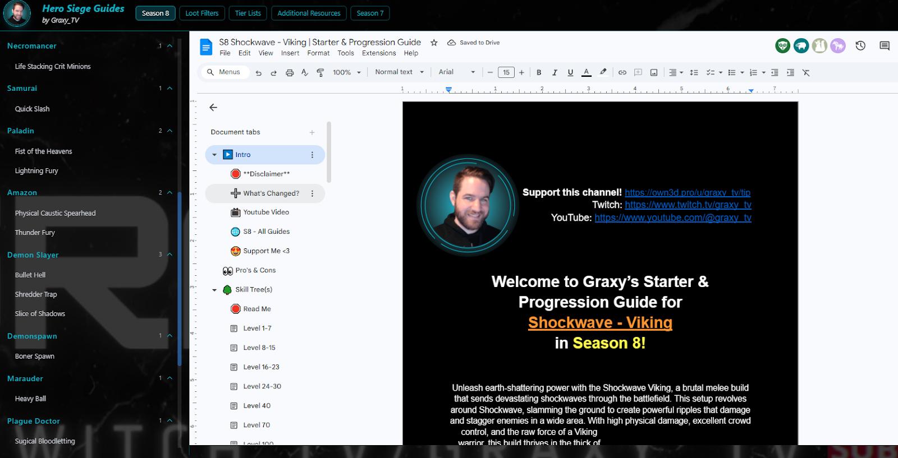<figcaption class="cap">images/image_003.png</figcaption></figure></div></section><section class="section" id="s-002"><h2>Season 9 Builds</h2><div class="story">Story ID: t.dc67qcolc6s8</div><div class="text">Season 9 Builds


*


https://www.graxyguides.com/</div></section><section class="section" id="s-003"><h2>Pros &amp; Cons</h2><div class="story">Story ID: t.vr5otpbqqcvq</div><div class="text">Pros &amp; Cons


Pros
Spin to Win Gameplay
Combat Orders for % life/mana
Movement skill built in and movement speed proc through Odin’s Fury
Built in defense, resistances, movement speed
AoE Tag for maximum screenwide AoE coverage
You can actually level as WW now and it’s not total ass
Viking can innately dual-wield 2 handed weapons

Cons
Cannot attack without moving (drives me nuts)
You will need to buy your weapon twice</div></section><section class="section" id="s-004"><h2>What’s Changed from</h2><div class="story">Story ID: t.86cv6uetrzb2</div><div class="text">What’s Changed from
Season 8 to Season 9?


Whirlwind has better starting damage to allow us to play it at level 16 and the scaling has been increased by 12% per point.
Seismic Slam early feels 10x better
Negatice Pressure Armor Break buff</div><div class="images"><figure class="card">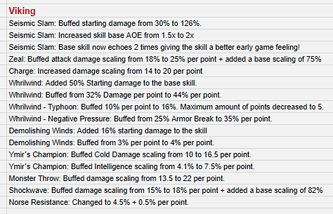<figcaption class="cap">images/image_004.png</figcaption></figure></div></section><section class="section" id="s-005"><h2>Support my channel!</h2><div class="story">Story ID: t.y9g7zv5ygx8l</div><div class="text">Support my channel!
&lt;3


Donations and Subscriptions are NOT mandatory, solicited, expected, or necessary. If you still decide to donate, they are massively appreciated and go to Upgrading and Improving Content Creation on Twitch and YouTube.


https://own3d.pro/u/graxy_tv/tip


Thank you so much.</div></section><section class="section" id="s-006"><h2>YouTube Video</h2><div class="story">Story ID: t.cqrmdf9fl4bw</div><div class="text">YouTube Video

Link:


Be sure to check out this video for build showcase and additional information on how to read this guide</div></section><section class="section" id="s-007"><h2>Leveling Video</h2><div class="story">Story ID: t.4uhohrhpbw7g</div><div class="text">Leveling Video

Link:


In this video, I take you through level 1 - 45 giving tips along the way. Then, you will run 45-100 the same way in nightmare.</div><div class="images"><figure class="card">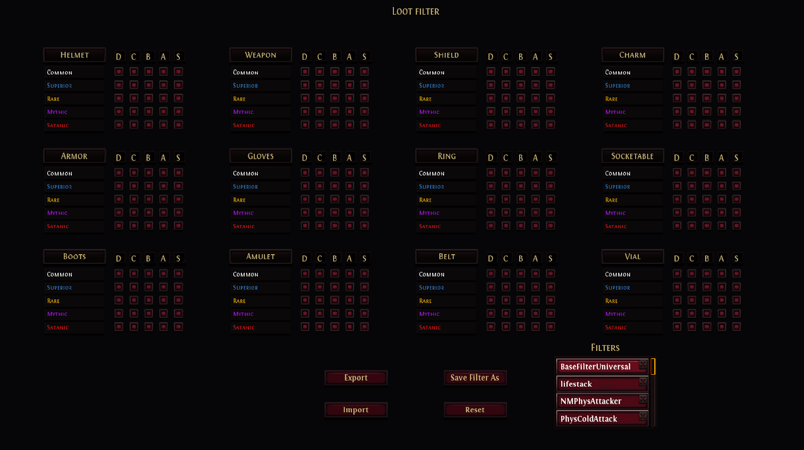<figcaption class="cap">images/image_005.png</figcaption></figure></div></section><section class="section" id="s-008"><h2>Loot Filters</h2><div class="story">Story ID: t.itt2mi9sum9</div><div class="text">Loot Filters

The loot filter system in Hero Siege is a massive quality-of-life improvement that gives you complete control over what loot is visible on your screen. This powerful tool is designed to eliminate clutter and help you focus on the items that matter most for your build.

When you open the loot filter interface, you&#x27;ll see a list of every item type in the game, from Weapons and Armor to Socketables and Charms and their respective tiers.


Affix-Based Filtering: To begin creating a custom filter, simply click on any item type. This will open a detailed sub-menu where you can select specific affixes you are looking for. You can choose to show or hide items based on a huge variety of stats. This allows you to filter out thousands of useless items while ensuring you never miss a potential upgrade.

Importing &amp; Exporting: One of the most significant features of this system is the ability to easily share filters with the community. On the Manage Filters screen, you will find both Import and Export options. When you export a filter, the game copies its data to your clipboard as a string of code. You can then paste this code anywhere—in a Discord channel, a build guide, or to a friend. To use a filter someone else has made, simply copy their code and use the Import function to load it directly into your game.

Account-Based Saving: This new system is cloud-based, meaning your filters are saved directly to your account. This is a huge benefit, as it means you can access and use your filters on any character. Once you have a filter set up, you can save it under My Filters and it will be there for all your characters and future seasons.</div></section><section class="section" id="s-009"><h2>Support this channel! https://own3d.pro/u/graxy_tv/tip</h2><div class="story">Story ID: t.25hl6rco0zyc</div><div class="text">                 	          Support this channel! https://own3d.pro/u/graxy_tv/tip
Twitch: https://www.twitch.tv/graxy_tv
YouTube: https://www.youtube.com/@graxy_tv


Graxy’s Season 9
Starter Loot Filters

Covers all classes &amp; archetypes
Helps you filter junk and highlight key items
Easy-to-follow setup for beginners &amp; veterans

-&gt; Link &lt;-

https://www.graxyguides.com/herosiege/builds/loot-filters/loot-filters/s9-starter-filters</div><div class="images"><figure class="card"><figcaption class="cap">images/image_006.png</figcaption></figure><figure class="card">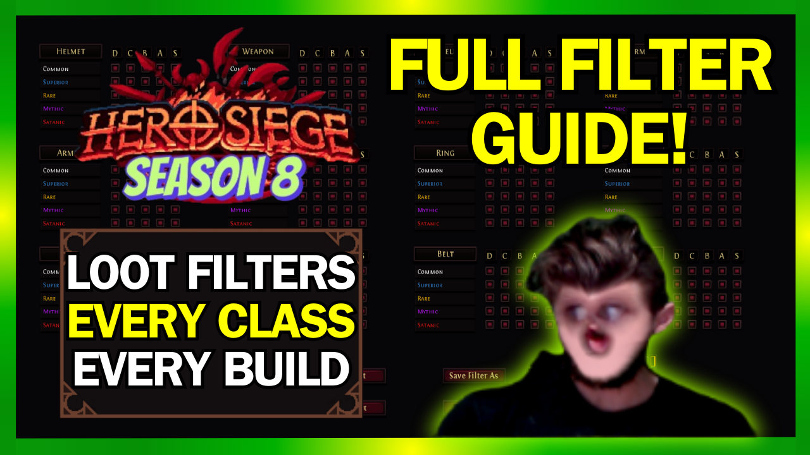<figcaption class="cap">images/image_007.png</figcaption></figure></div></section><section class="section" id="s-010"><h2>Loot Filters Explained</h2><div class="story">Story ID: t.ynw14g6sbbxo</div><div class="text">Loot Filters Explained


This video will explain everything you need to know about the new loot filtering system and how to set up any of my filters for Season 9.


Link: https://www.youtube.com/watch?v=w6l0D8BSfTU&amp;t=1s</div><div class="images"><figure class="card">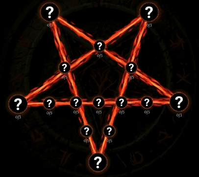<figcaption class="cap">images/image_010.png</figcaption></figure></div></section><section class="section" id="s-011"><h2>All Trees</h2><div class="story">Story ID: t.cbsvx7wjdwjq</div><div class="text">All Trees


This section has all skill trees, sub-skill trees and incarnation trees for this build at all stages of the game.</div><div class="images"><figure class="card">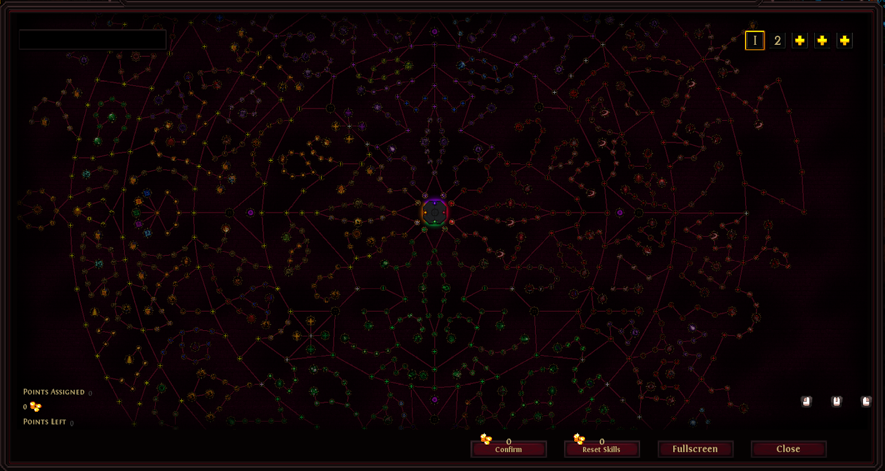<figcaption class="cap">images/image_009.png</figcaption></figure><figure class="card">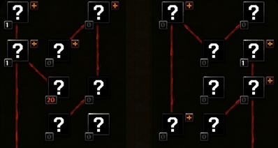<figcaption class="cap">images/image_008.png</figcaption></figure><figure class="card">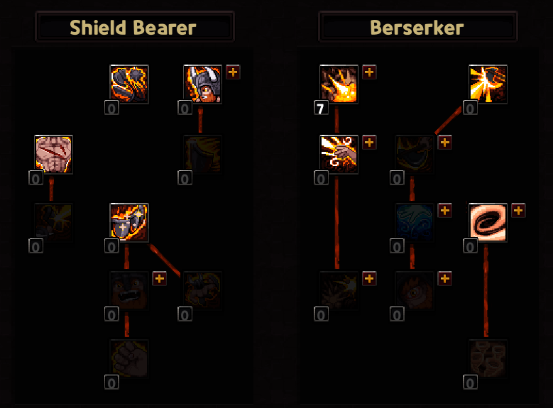<figcaption class="cap">images/image_011.png</figcaption></figure></div></section><section class="section" id="s-012"><h2>Skill Tree: Level 1 - 7</h2><div class="story">Story ID: t.yuqi34ncj1em</div><div class="text">Skill Tree: Level 1 - 7

All points into Seismic Slam.


*</div><div class="images"><figure class="card">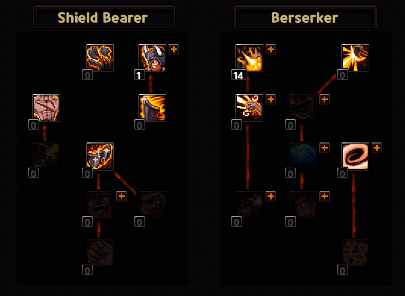<figcaption class="cap">images/image_012.png</figcaption></figure></div></section><section class="section" id="s-013"><h2>Skill Tree: Level 8 - 15</h2><div class="story">Story ID: t.s0blm8t5wrae</div><div class="text">Skill Tree: Level 8 - 15

Continue blasting points into Seismic Slam.

Additionally put one point into charge for movement.

*</div><div class="images"><figure class="card">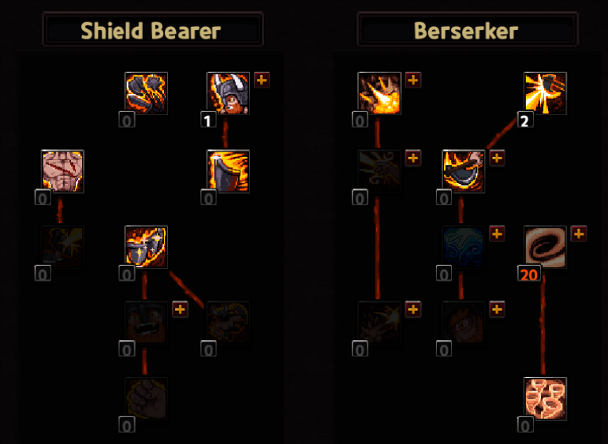<figcaption class="cap">images/image_013.png</figcaption></figure></div></section><section class="section" id="s-014"><h2>Skill Tree: Level 16 - 23</h2><div class="story">Story ID: t.53ko7884nxpu</div><div class="text">Skill Tree: Level 16 - 23

Spec all but 1 point into Whirlwind keeping that 1 point into charge for movement.

*</div><div class="images"><figure class="card">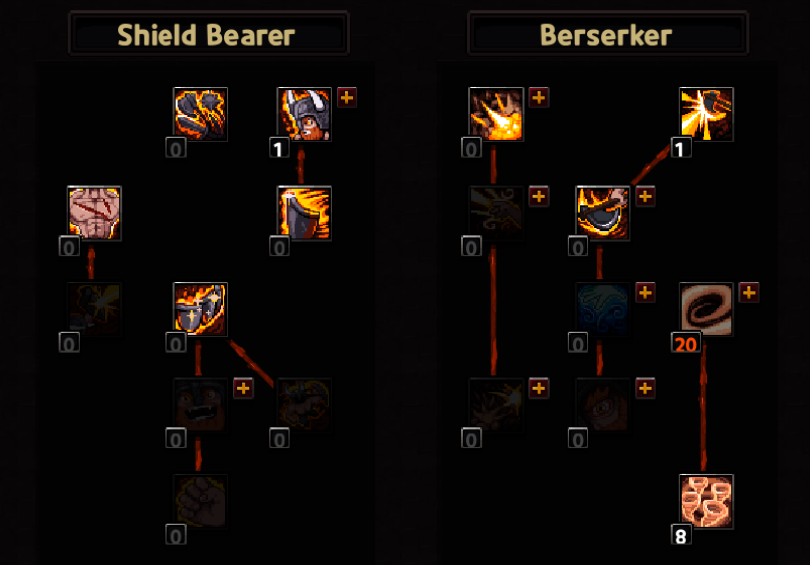<figcaption class="cap">images/image_014.png</figcaption></figure></div></section><section class="section" id="s-015"><h2>Skill Tree: Level 24 - 30</h2><div class="story">Story ID: t.blsyirxuvogx</div><div class="text"> Skill Tree: Level 24 - 30

You can go 2 ways with this. I prefer going into demolishing winds at 30 for the shotgunning.

Or

You can put the rest of your points into brute force. *</div><div class="images"><figure class="card">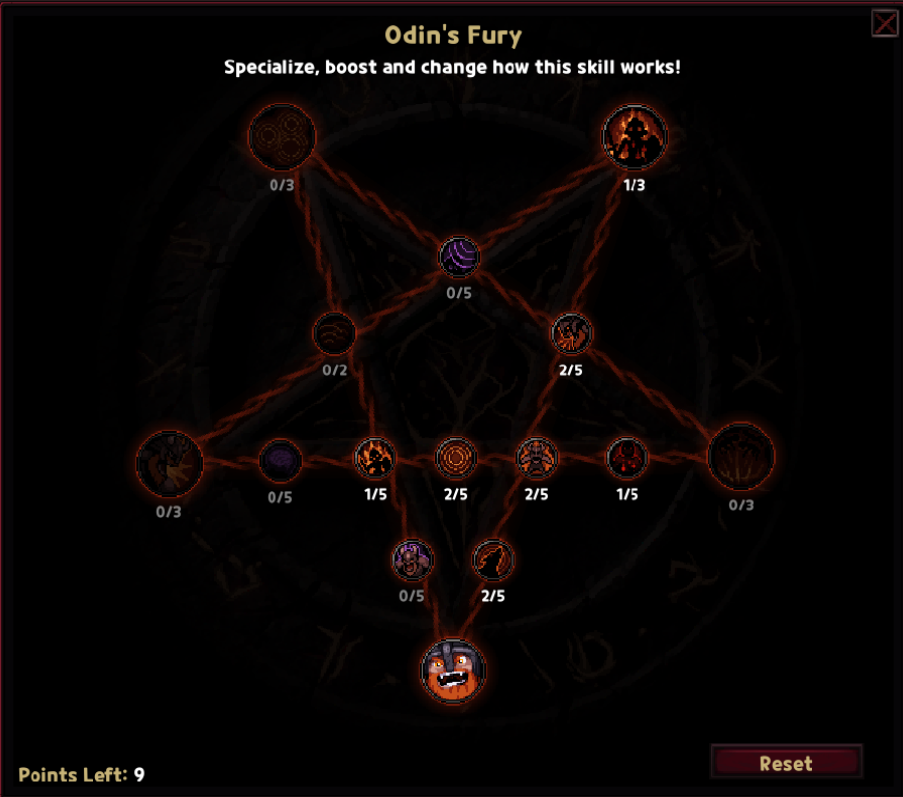<figcaption class="cap">images/image_015.png</figcaption></figure></div></section><section class="section" id="s-016"><h2>Skill Tree: Level 40</h2><div class="story">Story ID: t.blp05f4nzvj2</div><div class="text">Skill Tree: Level 40

Here we spec into all the passives and buffs on the left side of the tree.

Odin&#x27;s fury can be used to give you more damage at level 55. (see sub skill below)

Whirlwind subskill tree below as well.
*

*


Use Sharpened blades until you can get top right node.


*

Charge Below

*</div><div class="images"><figure class="card">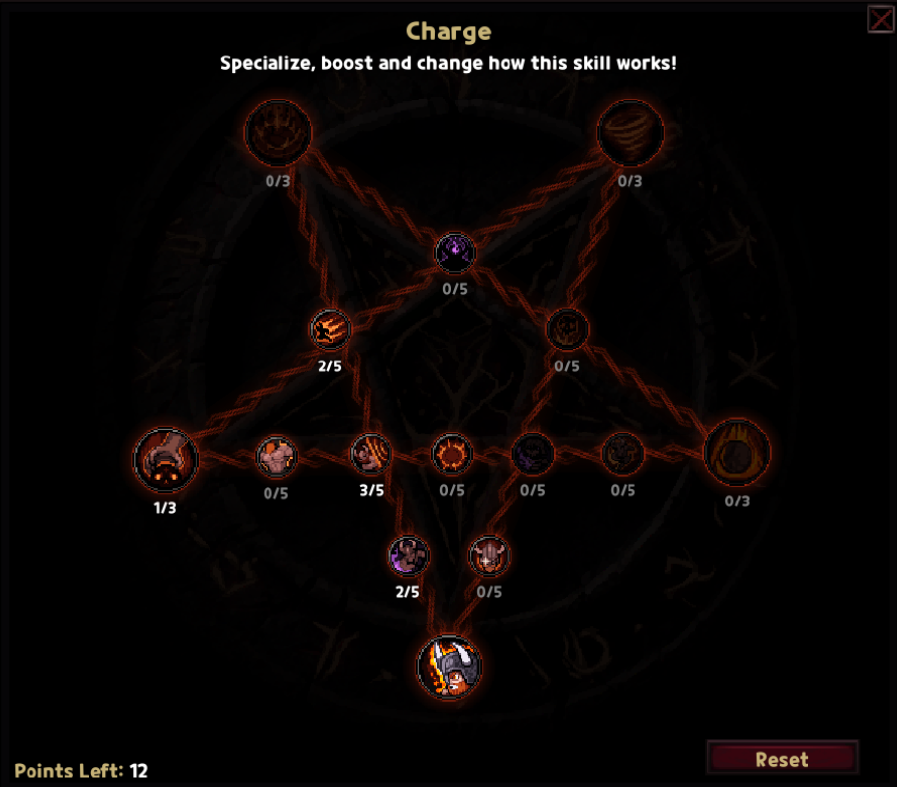<figcaption class="cap">images/image_017.png</figcaption></figure><figure class="card">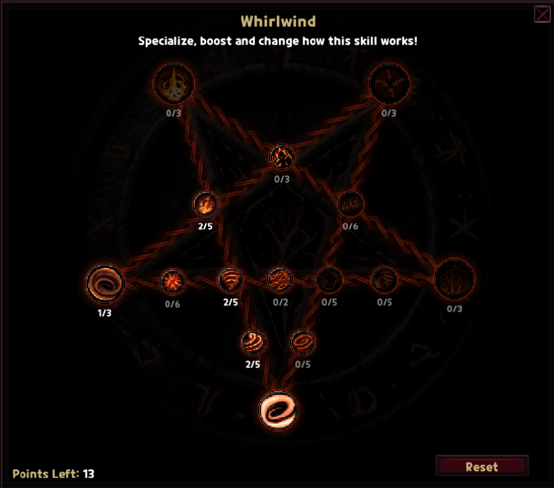<figcaption class="cap">images/image_018.png</figcaption></figure><figure class="card">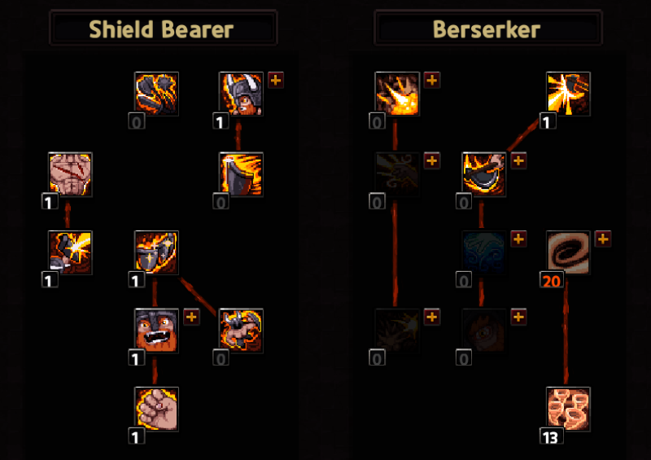<figcaption class="cap">images/image_016.png</figcaption></figure><figure class="card">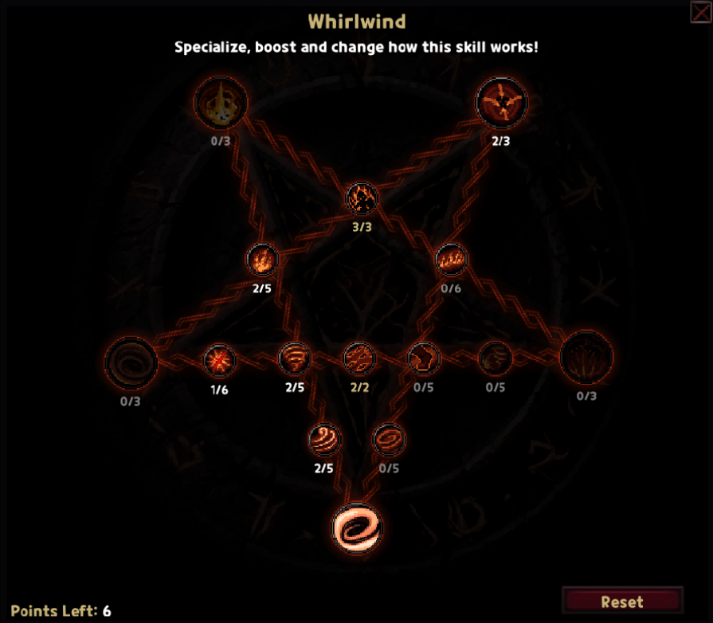<figcaption class="cap">images/image_022.png</figcaption></figure></div></section><section class="section" id="s-017"><h2></h2><div class="story">Story ID: t.blp05f4nzvj2</div><div class="text"></div><div class="images"><figure class="card"><figcaption class="cap">images/image_017.png</figcaption></figure><figure class="card"><figcaption class="cap">images/image_018.png</figcaption></figure><figure class="card"><figcaption class="cap">images/image_016.png</figcaption></figure><figure class="card"><figcaption class="cap">images/image_022.png</figcaption></figure></div></section><section class="section" id="s-018"><h2>Skill Tree: Level 70</h2><div class="story">Story ID: t.bqas36e6g0cr</div><div class="text">    Skill Tree: Level 70

Basically we’re just putting points into synergies now.

Zeal is a higher synergy for the actual whirlwind but with our subskill points we pull mobs into our tornadoes from demolishing winds and it shotguns them.
*
*


*


Charge below
*</div><div class="images"><figure class="card">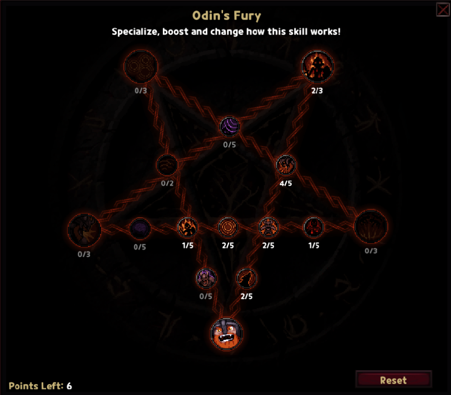<figcaption class="cap">images/image_020.png</figcaption></figure><figure class="card"><figcaption class="cap">images/image_019.png</figcaption></figure><figure class="card">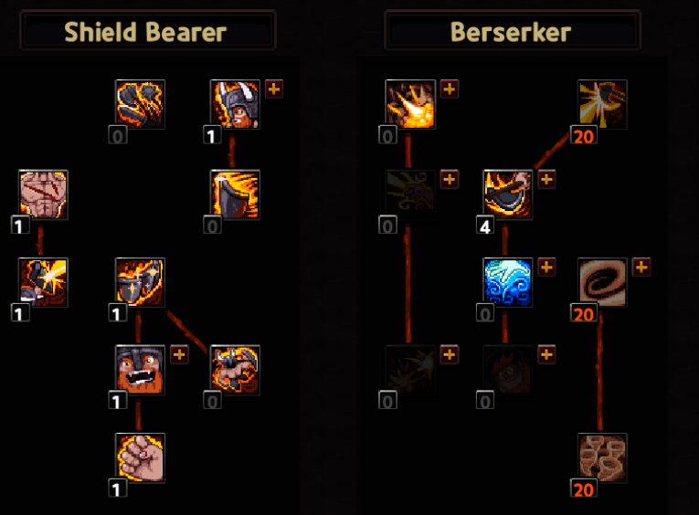<figcaption class="cap">images/image_021.png</figcaption></figure><figure class="card">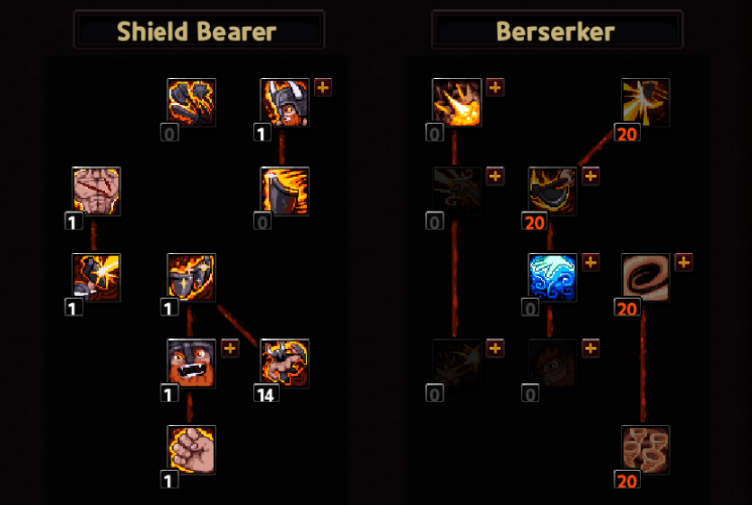<figcaption class="cap">images/image_024.png</figcaption></figure></div></section><section class="section" id="s-019"><h2>Skill Tree:  Whirlwind</h2><div class="story">Story ID: t.kddx5acc06z6</div><div class="text">Skill Tree:  Whirlwind

Here&#x27;s what our final level 100 tree will look.

only use this tree if you are NOT using a shield. (see below for shield tree)


*


*</div><div class="images"><figure class="card">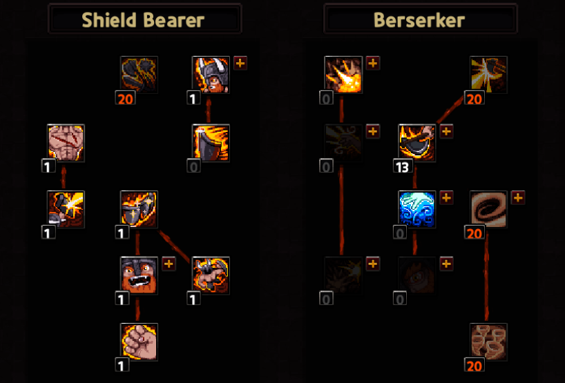<figcaption class="cap">images/image_023.png</figcaption></figure><figure class="card">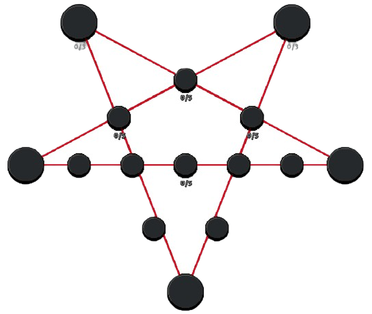<figcaption class="cap">images/image_025.png</figcaption></figure></div></section><section class="section" id="s-020"><h2>Sub-Skill Tree(s)</h2><div class="story">Story ID: t.llbjd2o8qy30</div><div class="text">Sub-Skill Tree(s)

Simply click the + in the top right of the skill you’re looking to spec into and a new window will pop-up. You gain 1 point for every 5 character levels for every skill you have allocated. You can reset this tree anytime for free.

Listed below are all the sub-skill trees I recommend while leveling as well as the final level 100 tree!</div><div class="images"><figure class="card">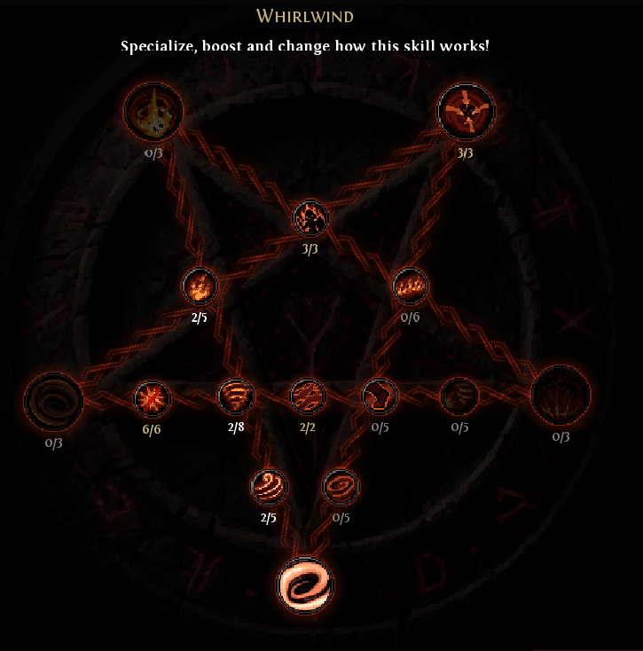<figcaption class="cap">images/image_026.png</figcaption></figure></div></section><section class="section" id="s-021"><h2>Whirlwind</h2><div class="story">Story ID: t.hj38cp466vw</div><div class="text">Whirlwind

Here I go for all the crit nodes and damage to burning targets which we will always have. 30% crit chance and 150% crit damage off the rip is crazy.</div><div class="images"><figure class="card">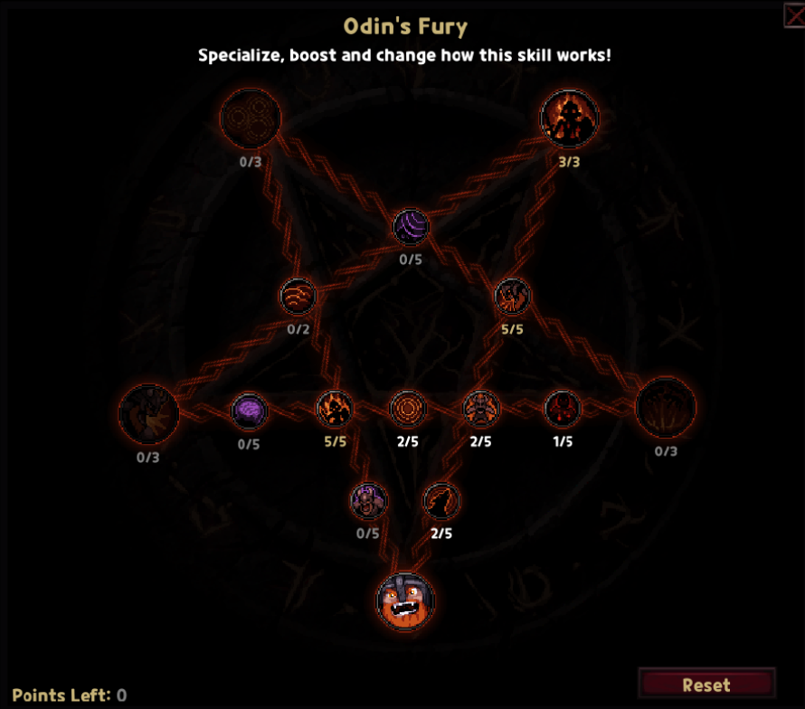<figcaption class="cap">images/image_027.png</figcaption></figure></div></section><section class="section" id="s-022"><h2>Odin’s Fury</h2><div class="story">Story ID: t.rhpk3mwpzyg3</div><div class="text">Odin’s Fury

Movement Speed and damage buff

*</div><div class="images"><figure class="card">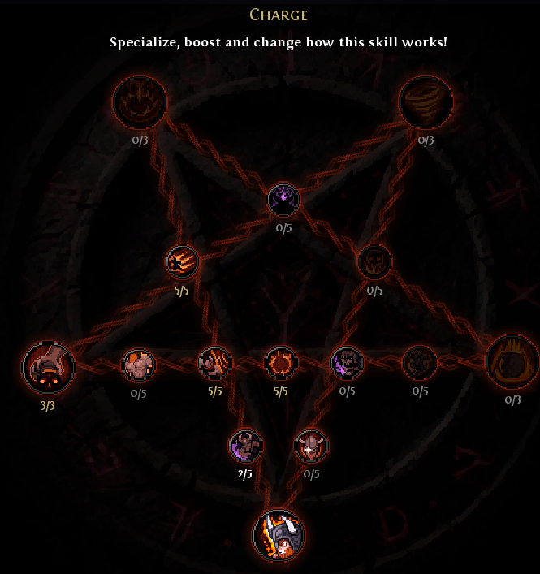<figcaption class="cap">images/image_028.png</figcaption></figure></div></section><section class="section" id="s-023"><h2>Charge</h2><div class="story">Story ID: t.ljqh7z976xos</div><div class="text">Charge

Just used to stack mobs together.</div></section><section class="section" id="s-024"><h2>Incarnation Levels</h2><div class="story">Story ID: t.8y8kxghjjkph</div><div class="text">Incarnation Levels


This section provides suggested paths for your Incarnation Tree based on how you want to play the build. These paths are designed as flexible frameworks rather than strict &quot;1:1 copies,&quot; as your optimal setup depends heavily on your gear.
While these suggestions account for common gear milestones, you should adapt your choices based on your current stats and preferred build feel. Use these paths as a foundation, but feel free to pivot as needed.

There will be a ton of mix and matching between the different trees as you level up!</div><div class="images"><figure class="card">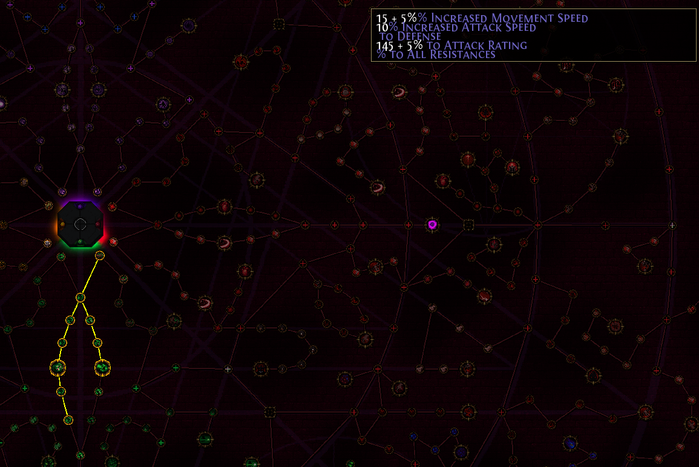<figcaption class="cap">images/image_032.png</figcaption></figure></div></section><section class="section" id="s-025"><h2>Resistance + Movement Speed</h2><div class="story">Story ID: t.328v9jmln0ob</div><div class="text">Resistance + Movement Speed


Movement Speed + Attack Rating


Crit Chance/Damage Rush


Life + Physical Damage</div><div class="images"><figure class="card">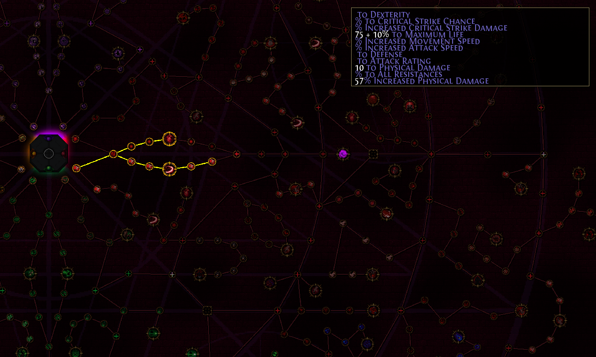<figcaption class="cap">images/image_029.png</figcaption></figure><figure class="card">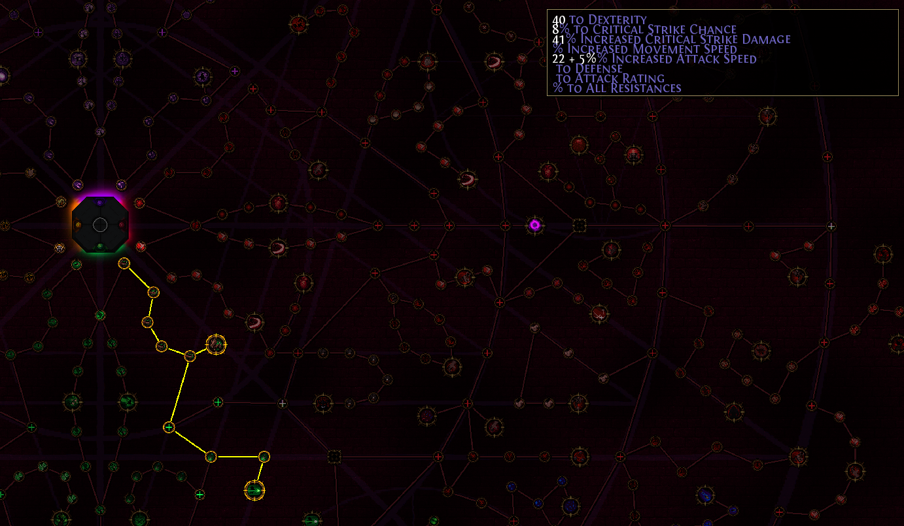<figcaption class="cap">images/image_031.png</figcaption></figure><figure class="card">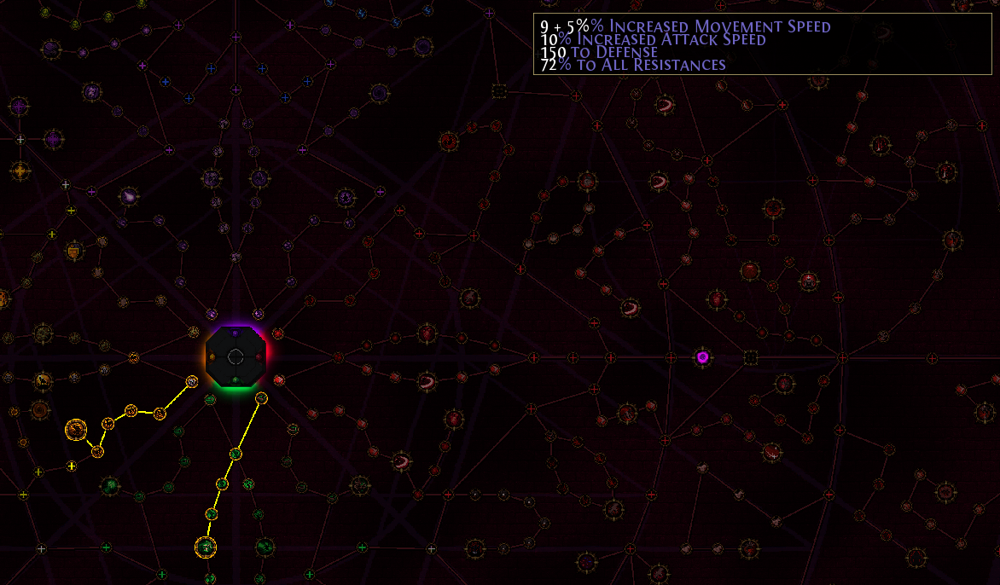<figcaption class="cap">images/image_030.png</figcaption></figure><figure class="card">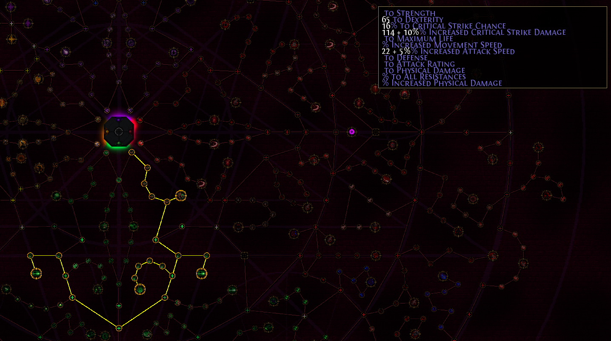<figcaption class="cap">images/image_036.png</figcaption></figure></div></section><section class="section" id="s-026"><h2>Life + Physical Damage + Movement Speed</h2><div class="story">Story ID: t.fexh6yqd3nlz</div><div class="text">Life + Physical Damage + Movement Speed


Life + Res + Physical Damage


Maximize Movement Speed


Crit Chance/Damage Focus</div><div class="images"><figure class="card">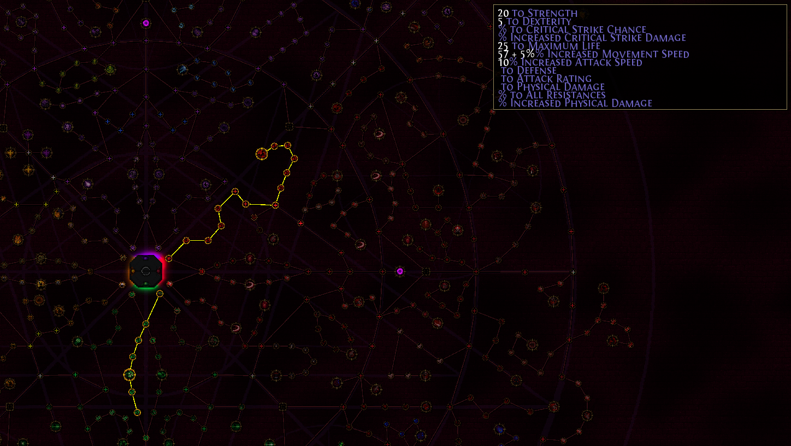<figcaption class="cap">images/image_035.png</figcaption></figure><figure class="card">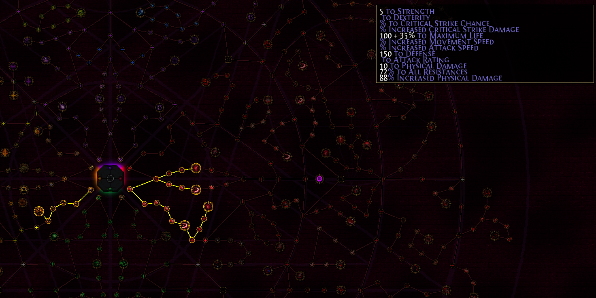<figcaption class="cap">images/image_034.png</figcaption></figure><figure class="card">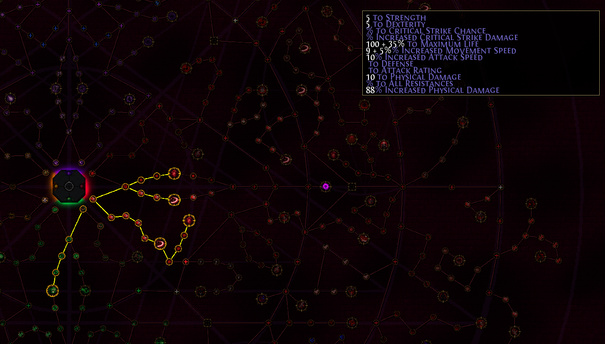<figcaption class="cap">images/image_033.png</figcaption></figure><figure class="card">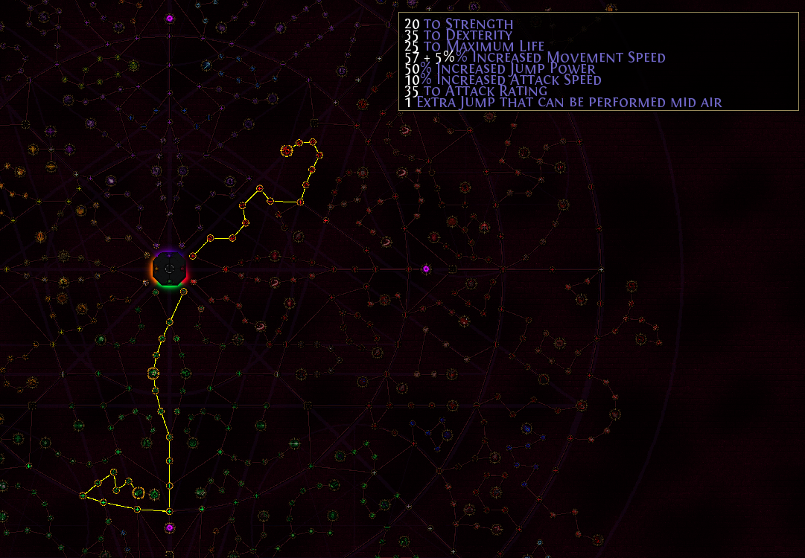<figcaption class="cap">images/image_039.png</figcaption></figure></div></section><section class="section" id="s-027"><h2>Life + Physical Damage + Instant Leech</h2><div class="story">Story ID: t.34kbj8hntq1h</div><div class="text">Life + Physical Damage + Instant Leech


AoE Radius


Maximize Movement Speed + Jumping Power


Crit Chance/Damage + Res + Attack Speed Focus</div><div class="images"><figure class="card">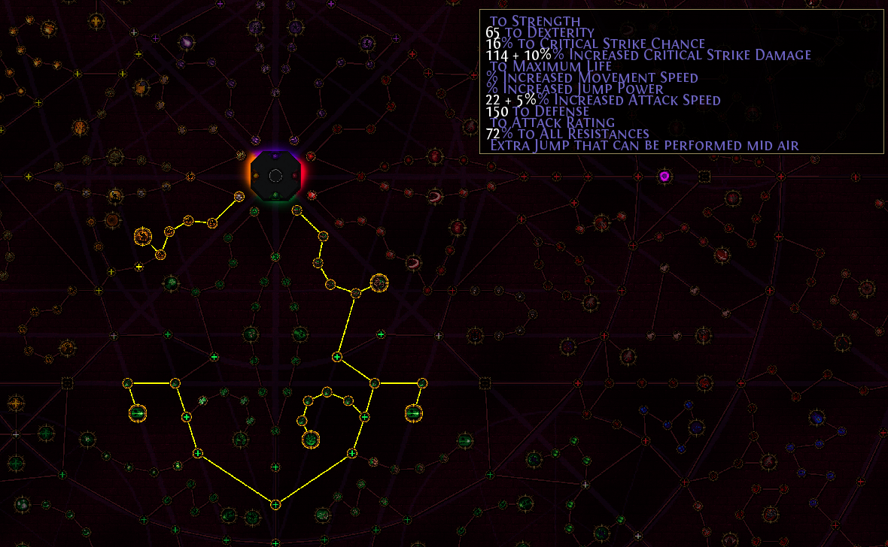<figcaption class="cap">images/image_038.png</figcaption></figure><figure class="card">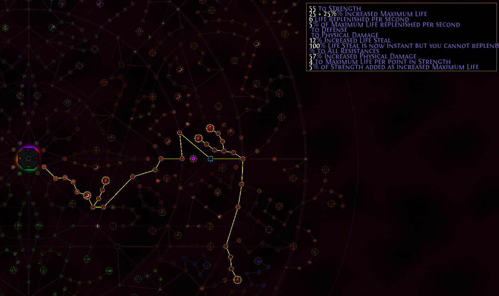<figcaption class="cap">images/image_040.png</figcaption></figure><figure class="card">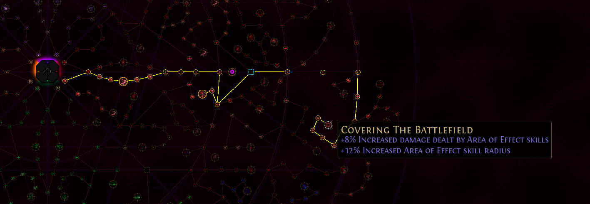<figcaption class="cap">images/image_037.png</figcaption></figure><figure class="card">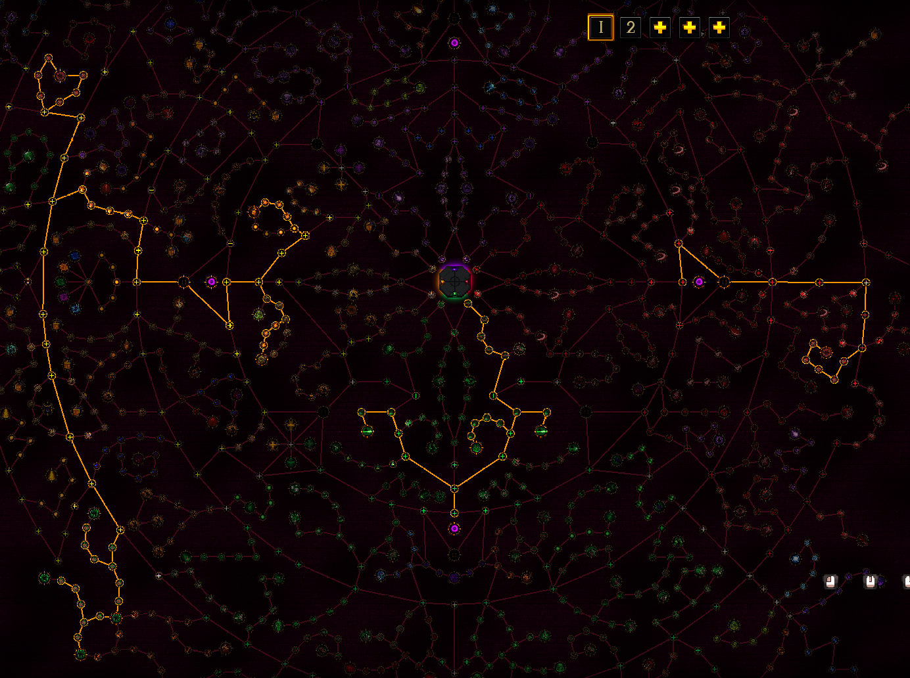<figcaption class="cap">images/image_041.png</figcaption></figure></div></section><section class="section" id="s-028"><h2>Endgame - My Recommendation</h2><div class="story">Story ID: t.30wojb7klzv7</div><div class="text">Endgame - My Recommendation

Maximum AoE + Crit

H


Unarmed Strength Stacking</div><div class="images"><figure class="card">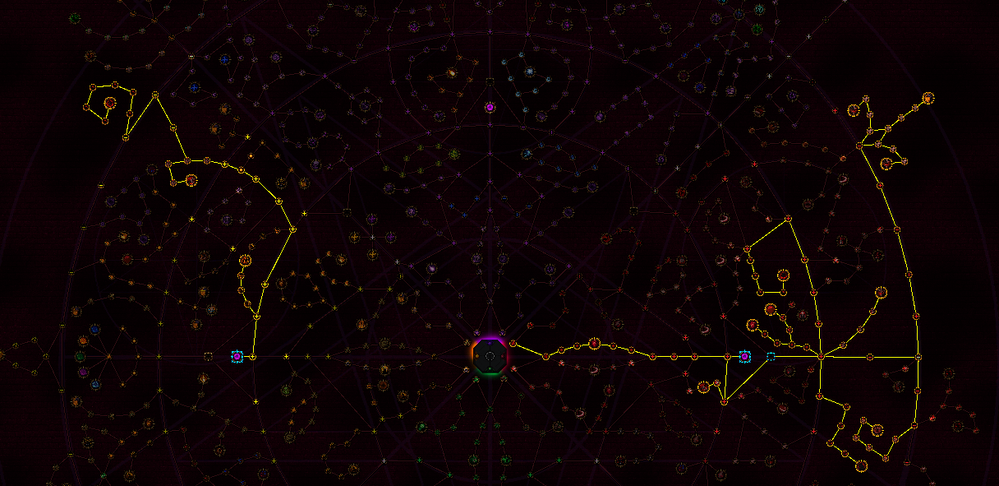<figcaption class="cap">images/image_042.png</figcaption></figure></div></section><section class="section" id="s-029"><h2>Attribute Allocation</h2><div class="story">Story ID: t.dlxjb2vzwcbr</div><div class="text">Attribute Allocation


1-100:
1 point Strength
1 point Dexterity*
2 points Vitality
Enough energy to feel comfortable
With mana leech shouldn’t need much, maybe 20 points worth

*Dexterity grants attack rating which is useful early before you get items and skill levels to increase your attack rating or ignore target defense.

Endgame:
All Points Strength</div></section><section class="section" id="s-030"><h2>Gearing</h2><div class="story">Story ID: t.vljtaix8ykor</div><div class="text">Gearing

This section is designed to give you workable suggestions on what gear to acquire at different stages of the game.

You, as a player, need to look at your current gear and figure out what options make sense for you.


It’s up to you to experiment.</div><div class="images"><figure class="card">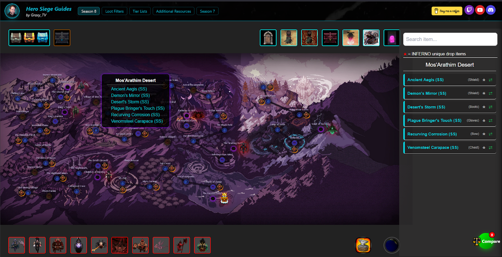<figcaption class="cap">images/image_043.png</figcaption></figure></div></section><section class="section" id="s-031"><h2>Item Locator</h2><div class="story">Story ID: t.ew0faaetedpa</div><div class="text">Item Locator

Located on my website is a map of the world. Hover over any location to see each item bias’. You can also see boss drops, league content drops, chest drops and global drops. Wonderful for satanic zone farming!


-&gt;	Available here  &lt;-
https://www.graxyguides.com/</div></section><section class="section" id="s-032"><h2>Leveling Gear</h2><div class="story">Story ID: t.rzvgm038qvfq</div><div class="text">Leveling Gear

For most of your leveling journey, you&#x27;ll be looking for Rare or Mythic items that match your character&#x27;s damage type. While you will find some useful Satanic items, you shouldn&#x27;t rely on them since they are not guaranteed to drop. The goal is to keep progressing, not to stop and farm for specific gear. I have a section dedicated to useful leveling satanics to look for.
Runewords are still available in Season 9, but runes are less common. You can get runes by completing quests in Acts 1 on Normal, Nightmare, and Hell difficulties. You can then use the Prospect Station in Act 1 to downgrade them as needed. You&#x27;ll also naturally find runes as you play.
Before you create a runeword, make sure to check the level requirements for both the runes and the white base item. The in-game journal can sometimes be misleading, so it&#x27;s always best to double-check these requirements yourself.</div><div class="images"><figure class="card">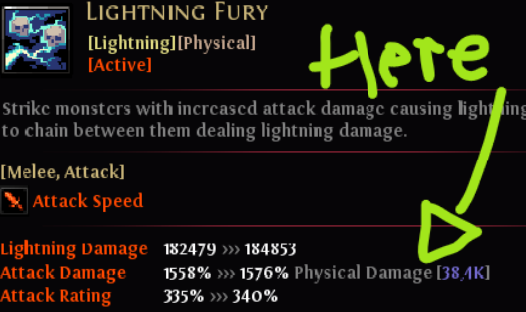<figcaption class="cap">images/image_045.png</figcaption></figure></div></section><section class="section" id="s-033"><h2>Physical Gems (Diamonds)</h2><div class="story">Story ID: t.enjvzigo8vok</div><div class="text">Physical Gems (Diamonds)

Physical Gems, also known as Diamonds, were a new addition in Season 7 and will help you at all stages of the game. Their main purpose is to just get you more damage. Especially early on when your skills feel a little weak, these can really give it that extra push.
Every ~7 or so physical damage equals 1 skill point. This may vary as it mostly depends on the skill, but this is an easy way to think about how much damage they’re giving. You can also look at the physical damage tooltips on skills to see exactly how much the gems are increasing your damage.</div><div class="images"><figure class="card">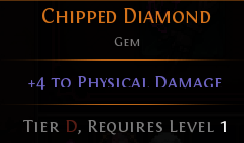<figcaption class="cap">images/image_047.png</figcaption></figure><figure class="card">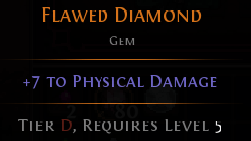<figcaption class="cap">images/image_046.png</figcaption></figure><figure class="card"><figcaption class="cap">images/image_049.png</figcaption></figure><figure class="card"><figcaption class="cap">images/image_048.png</figcaption></figure><figure class="card"><figcaption class="cap">images/image_050.png</figcaption></figure><figure class="card">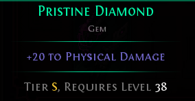<figcaption class="cap">images/image_044.png</figcaption></figure></div></section><section class="section" id="s-034"><h2>Weapon</h2><div class="story">Story ID: t.b11bs6xwwr4s</div><div class="text">Weapon

Normal → Mythic Weapon Affixes to Look For:


+All Skills/Physical Skills

+x to Physical Skill Damage
(This is flat damage)

Enhanced Damage

Movement Speed
(Great for traversing early zones)

Attack Speed
(More attacks is a more damage multiplier)

Life/Mana on Kill
(Helps with sustain)

Strength

Energy/Mana
(Helps with using skills more)

Ignore Target Defense/Attack Rating

Life/Mana Leech


Random Low Level Satanic Weapons

Runeword Options:

Skysong:


Malice:</div><div class="images"><figure class="card"><figcaption class="cap">images/image_051.png</figcaption></figure><figure class="card"><figcaption class="cap">images/image_052.png</figcaption></figure></div></section><section class="section" id="s-035"><h2>Off-Hand</h2><div class="story">Story ID: t.h5e323e88tmi</div><div class="text">      Off-Hand

Normal → Mythic Off-Hand Affixes to Look For:


+All Skills/Physical Skills

Attack Speed
(Casting more is a more damage multiplier)

Movement Speed
(Great for traversing early zones)

Life/Life%

Resistance

Strength
(1 int is 1% magic skill damage)

Energy/Mana
(Helps with using skills more)

Ignore Target Defense/Attack Rating


Random Low Level Satanic Off-Hands


Runeword Options:

Skysong


Divine Contemplation</div><div class="images"><figure class="card"><figcaption class="cap">images/image_055.png</figcaption></figure><figure class="card"><figcaption class="cap">images/image_053.png</figcaption></figure><figure class="card"><figcaption class="cap">images/image_054.png</figcaption></figure><figure class="card"><figcaption class="cap">images/image_056.png</figcaption></figure></div></section><section class="section" id="s-036"><h2>Helmet</h2><div class="story">Story ID: t.2dpm7ox0zq44</div><div class="text">      Helmet


Normal → Mythic Helmet Affixes to Look For:

+All Skills/Physical  Skills

+x to Physical  Skill Damage
(This is flat damage)

Attack Speed
(Attacking more is a more damage multiplier)

Life/Life%

Resistance

Strength
(1 int is 1% magic skill damage)

Energy/Mana
(Helps with using skills more)

Ignore Target Defense/Attack Rating

Life/Mana Leech

Random Low Level Satanic Helmets


Runeword Options:


    Scholar


 Flesh Ripper</div><div class="images"><figure class="card"><figcaption class="cap">images/image_057.png</figcaption></figure></div></section><section class="section" id="s-037"><h2>Chest</h2><div class="story">Story ID: t.9rjtxl423fbu</div><div class="text">      Chest

Normal → Mythic Chest Affixes to Look For:


+All Skills/Physical Skills

Movement Speed
(Great for traversing early zones)

Attack Speed
(Attacking more is a more damage multiplier)

Life/Life%

Damage Reduced By
(Very strong damage reduction)

Physical Damage Reduction
(Great for reducing phys hits)

Resistance

Strength
(1 int is 1% magic skill damage)

Energy/Mana
(Helps with using skills more)

Ignore Target Defense/Attack Rating

Random Low Level Satanic Chest

Runeword Options:</div><div class="images"><figure class="card"><figcaption class="cap">images/image_058.png</figcaption></figure><figure class="card"><figcaption class="cap">images/image_060.png</figcaption></figure><figure class="card"><figcaption class="cap">images/image_059.png</figcaption></figure></div></section><section class="section" id="s-038"><h2>Gloves</h2><div class="story">Story ID: t.lo4dz9w7xe9v</div><div class="text">      Gloves


Normal → Mythic Glove Affixes to Look For:

+All Skills/Physical  Skills

Cooldown Reduction

+x to Physical Skill Damage
(This is flat damage)

Enhanced Damage

Life/Life%

Resistance

Life/Mana on Kill
(Helps with sustain)

Strength
(1 int is 1% magic skill damage)

+Skills to a specific skill
(Rarely you’ll find +x to a specific damage skill your character uses)

Ignore Target Defense/Attack Rating

Life/Mana Leech

Random Low Level Satanic Gloves</div></section><section class="section" id="s-039"><h2>Boots</h2><div class="story">Story ID: t.ap9s4h98qhaj</div><div class="text">Boots

Normal → Mythic Boot Affixes to Look For:

Movement Speed
(Prioritize this to move through zones faster)

+All Skills/Physical  Skills

Cooldown Reduction

+x to Physical Skill Damage
(This is flat damage)

Enhanced Damage

Life/Life%

Resistance

Strength
(1 int is 1% magic skill damage)

Ignore Target Defense/Attack Rating

Life/Mana Leech

Random Low Level Satanic Boots


Runeword Options:

Quicksteps
Cheaper with a lot of MS
Can use at level 31</div><div class="images"><figure class="card"><figcaption class="cap">images/image_061.png</figcaption></figure></div></section><section class="section" id="s-040"><h2>Belt</h2><div class="story">Story ID: t.34k0tz6jw90p</div><div class="text">Belt

Normal → Mythic Belt Affixes to Look For:

+All Skills/Physical  Skills

Cooldown Reduction

Life/Life%

Resistance

Strength
(1 int is 1% magic skill damage)

Energy/Mana
(Helps with using skills more)

Ignore Target Defense/Attack Rating

Random Low Level Satanic Belts</div></section><section class="section" id="s-041"><h2>Rings</h2><div class="story">Story ID: t.m3nj3krw65jx</div><div class="text">Rings

Normal → Mythic Ring Affixes to Look For:

Enhanced Damage

Critical Strike Chance

Critical Strike Damage

Skill Haste

+All Skills/Physical Skills

+x to Additive Physical Damage
(This is flat damage)

Attack Speed
(Attacking more is a more damage multiplier)

Enhanced Damage

Life/Life%

Resistance

Life/Mana on Kill
(Helps with sustain)

Strength
(1 int is 1% magic skill damage)

Ignore Target Defense/Attack Rating

Life/Mana Leech

Random Low Level Satanic Rings</div></section><section class="section" id="s-042"><h2>Amulet</h2><div class="story">Story ID: t.ew6oqpd81e6p</div><div class="text">Amulet

Normal → Mythic Amulet Affixes to Look For:

Enhanced Damage

Critical Strike Chance

Critical Strike Damage

Skill Haste

Attack Speed
(Attacking more is a more damage multiplier)

Enhanced Damage

Life/Life%

Resistance

Life/Mana on Kill
(Helps with sustain)

Strength
(1 int is 1% magic skill damage)

Ignore Target Defense/Attack Rating

Life/Mana Leech

Random Low Level Satanic Amulets</div></section><section class="section" id="s-043"><h2>Charms</h2><div class="story">Story ID: t.jvxjjqvfdbyz</div><div class="text">Charms

Normal → Mythic Charm Affixes to Look For:

Enhanced Damage

Critical Strike Chance

Critical Strike Damage

Skill Haste


+x to physical damage
(This is flat damage for attacks)

Resistance

Life/Life%

Energy/Mana
(Helps with using skills more)

Attack Speed
(Casting more is a more damage multiplier)

Life/Mana on Kill
(Helps with sustain)

Strength
(1 int is 1% attack damage)

Movement Speed
(Great for traversing early zones)

Enhanced Defense
(Underrated Affix)

Leech

Random Low Level Satanic Charms</div></section><section class="section" id="s-044"><h2>Early Game</h2><div class="story">Story ID: t.ecd6h6g52y0x</div><div class="text">Early Game

This section is designed to help you gear as a fresh level 100 character. There is no BiS gear at this point. Most items could be swapped with strong mythics. Item decisions will revolve around how your character feels over direct power upgrades.

For example, if your character has a built-in teleport, but low cast rate, choosing items that have higher faster cast rate than others can make the build feel smoother.

You could put any combination of these budget items together and feel capable of completing Hell difficulty and begin pushing difficulty.

With the new skill tags on Augments, my item suggestions are a little broader now. In most cases, I’ve added a &#x27;hint&#x27; next to each one to explain in what situation you may choose a particular item.


DO NOT UNDERESTIMATE HOW STRONG MYTHIC ITEMS CAN BE!</div><div class="images"><figure class="card"><figcaption class="cap">images/image_064.png</figcaption></figure></div></section><section class="section" id="s-045"><h2>Weapons</h2><div class="story">Story ID: t.5ecwid69502u</div><div class="text">Weapons

These buffs to weapon enhanced physical damage make non-runeword weapons strong and easy to obtain.

For Runewords, look for superior, exceptional, astral or quantum bases that have additional enhanced damage, all skills, attack speed, attack damage, strength based on level. These traits are added to the runeword upon creation and are key to gaining additional power needed to progress.

Your weapons attack damage and APS is everything.


These budget/early runewords are very cheap to make so don’t feel like you have to wait it out for a huge base to drop. Make one ASAP and when you find a slight base upgrade, remake. This will allow you to constantly upgrade your dps.

Dante’s Demon Blade: Decent dps, good aps, attack rating, attributes and bit of deadly blow. Great starter weapon.


Nomad’s Sandslicer: Similar to Dante’s offering movement speed and ITD. Another great starter option.


Steve’s Mighty Sword: 1-Hander with 40 attributes, tons of attack rating and additive damage. Also decent if you want to go with a shield approach.


Inferno Slayer: Less dps than other options, but has a huge life and enhanced damage boost. Use sockets for APS.


Spiritus: Last resort weapon, but it’ll get the job done early.


Runeword Options:
Runes drops have been highly nerfed in S9 so no telling how expensive these runes will be. Rather you know about it early and watch prices than assume market values.

Check the journal to ensure you can make it in your weapons base.


Super budget</div><div class="images"><figure class="card"><figcaption class="cap">images/image_065.png</figcaption></figure><figure class="card"><figcaption class="cap">images/image_062.png</figcaption></figure><figure class="card"><figcaption class="cap">images/image_063.png</figcaption></figure><figure class="card"><figcaption class="cap">images/image_068.png</figcaption></figure><figure class="card"><figcaption class="cap">images/image_069.png</figcaption></figure><figure class="card"><figcaption class="cap">images/image_066.png</figcaption></figure><figure class="card"><figcaption class="cap">images/image_067.png</figcaption></figure><figure class="card"><figcaption class="cap">images/image_070.png</figcaption></figure></div></section><section class="section" id="s-046"><h2>Off-Hands</h2><div class="story">Story ID: t.epexx3ytnj2g</div><div class="text">Off-Hands

If you choose to rock a 1-hander and shield, here are some great shield options. You may need to do this for resistance cap, which will lower your damage, but you can’t deal damage if you’re dead.


Sacred Aegis: Insane life pool, increased attack rating, fixes mana leech and has up to 4 sockets for additional resistance/life.


Gem Encrusted Tower: A healthy amount of life, all resistance and damage reduction. Sockets can be used for more life/resistance/reduction. Very nice.


King’s Tower Shield: Similar to Gem Encrusted Tower, but offers all attributes which increases damage as well. Solid choice.


Renguard of Carnage: Great damage shield for a crit build. We can also take advantage of the extra damage.


Iron Giants Shield: Interesting shield if you have a decent life pool and take a lot of small hits.


Gladiator’s Wall: Probably the best damage shield early. Offers far less defenses that the other options.</div><div class="images"><figure class="card"><figcaption class="cap">images/image_071.png</figcaption></figure><figure class="card"><figcaption class="cap">images/image_074.png</figcaption></figure><figure class="card"><figcaption class="cap">images/image_072.png</figcaption></figure><figure class="card"><figcaption class="cap">images/image_075.png</figcaption></figure><figure class="card"><figcaption class="cap">images/image_073.png</figcaption></figure><figure class="card"><figcaption class="cap">images/image_076.png</figcaption></figure></div></section><section class="section" id="s-047"><h2>Helmets</h2><div class="story">Story ID: t.9wwrp7p1hwxh</div><div class="text">Helmets


Pit Lord’s Vanquisher: Very offensive helmet. Perfect for a crit build


Assassin’s Hood: Great all-rounder helmet. Best used on builds that have actives or cooldown skills.


Demon Warlord’s Helm: Provides a source of open wounds (bleed) for builds with extra damage to bleeding monsters. Nice life pool, flat damage and all resistance.


Butcher’s Hood: Great for early ailment damage builds. Offers a source of deadly blow and ignore target defense which is quite important.


Tenebris’ Grievance: Great for builds that thrive on more attack speed. If you’re APS feels low, this can be a good pick-up. Also provides a healthy chunk on strength for strength stacking builds, flat physical damage and attack rating.


Judge, Jury &amp; Executioner: Great if you’re struggling to hit monsters. Hefty amount of ignore target defense and some attack rating.


Knight Captain’s Helmet: Great for deadly blow capping. Provides some damage reduction and a decent amount of flat physical damage.


Chimera: Solid stepping stone helmet.

Runes drops have been highly nerfed in S9 so no telling how expensive these runes will be. Rather you know about it early and watch prices than assume market value.</div><div class="images"><figure class="card"><figcaption class="cap">images/image_078.png</figcaption></figure><figure class="card"><figcaption class="cap">images/image_079.png</figcaption></figure><figure class="card"><figcaption class="cap">images/image_082.png</figcaption></figure><figure class="card"><figcaption class="cap">images/image_080.png</figcaption></figure><figure class="card"><figcaption class="cap">images/image_081.png</figcaption></figure><figure class="card"><figcaption class="cap">images/image_077.png</figcaption></figure><figure class="card"><figcaption class="cap">images/image_083.png</figcaption></figure><figure class="card"><figcaption class="cap">images/image_087.png</figcaption></figure></div></section><section class="section" id="s-048"><h2>Chest</h2><div class="story">Story ID: t.a9nqjuxxxfxx</div><div class="text">Chest

Cocoon of the Berserker: Great value. Dual-leech, enhanced damage (goes to 100%) and some attack rating


Cuirass of Blood: Very strong as well. Attack speed/ITD option. Great for strength stacking and healthy amount of flat physical damage.


Gladiator’s Demise: Another very strong option. Bit more defensive and all-rounder.


Fortress: Absolutely BiS at this stage, but will require a Xo rune. Runes drops have been highly nerfed in S9 so no telling how expensive this rune will be. Rather you know about it early and watch prices than assume market value.


Gladstone Goose’s Jacket: Defensive option. Comes with magic find and experience gain as well which are highly sought after.


Mayhem: Super budget</div><div class="images"><figure class="card"><figcaption class="cap">images/image_085.png</figcaption></figure><figure class="card"><figcaption class="cap">images/image_084.png</figcaption></figure><figure class="card"><figcaption class="cap">images/image_086.png</figcaption></figure><figure class="card"><figcaption class="cap">images/image_088.png</figcaption></figure><figure class="card"><figcaption class="cap">images/image_089.png</figcaption></figure><figure class="card"><figcaption class="cap">images/image_092.png</figcaption></figure></div></section><section class="section" id="s-049"><h2>Gloves</h2><div class="story">Story ID: t.b1vvlfdyr1lj</div><div class="text">Gloves


Siege Breakers: All rounder. ITD, Enhanced Damage and all resistances. Great option.


Warmaster’s Tribal Paws: Crit chance/damage based option. Very solid on crit builds.


Razor Knuckles: Provides a source of open wounds (bleed) for extra damage to bleeding targets. Also has a healthy chunk of strength and some attack speed. Great early if you’re strength stacking.


Shinobi’s Deadwraps: Another crit based gloves. Best paired with other gear that improves your deadly blow.


Throat Cutters: Maximum budget gloves. Better off finding a mythic.</div><div class="images"><figure class="card"><figcaption class="cap">images/image_093.png</figcaption></figure><figure class="card"><figcaption class="cap">images/image_090.png</figcaption></figure><figure class="card"><figcaption class="cap">images/image_091.png</figcaption></figure><figure class="card"><figcaption class="cap">images/image_094.png</figcaption></figure><figure class="card"><figcaption class="cap">images/image_099.png</figcaption></figure></div></section><section class="section" id="s-050"><h2>Boots</h2><div class="story">Story ID: t.pe1r7u7y33ml</div><div class="text">Boots


Quickstep: Maximum budget. Speed, attack speed, leech. Very nice


Arena Master’s Marchers: Great damage option, but less movement speed.


Crushfleet: BiS for quite awhile. Tons of speed, attack speed, deadly blow. Runes drops have been highly nerfed in S9 so no telling how expensive these runes will be. Rather you know about it early and watch prices than assume market value.


Hermes Boots: Very defensive and speed focused boots. You can pair the jumping power with more jumping power in the incarnation tree.


Whisper Walker’s Feiyue:  Best used on builds that have active or cooldown skills. Still offers flat phys and strength for strength stackers.


Lumberjack’s Forestry Boots:  Extreme budget crit boots.</div><div class="images"><figure class="card"><figcaption class="cap">images/image_100.png</figcaption></figure><figure class="card"><figcaption class="cap">images/image_096.png</figcaption></figure><figure class="card"><figcaption class="cap">images/image_095.png</figcaption></figure><figure class="card"><figcaption class="cap">images/image_098.png</figcaption></figure><figure class="card"><figcaption class="cap">images/image_097.png</figcaption></figure><figure class="card"><figcaption class="cap">images/image_107.png</figcaption></figure></div></section><section class="section" id="s-051"><h2>Belts</h2><div class="story">Story ID: t.4yhg8w2udkfr</div><div class="text">Belts


Vagabond’s Strap:  Very offensive belt for crit centric builds.


Butcher’s Belt:  Defensive belt with some + skills.


Assassin’s Belt:  Another defensive belt with leech and attack rating. Useful if you’re struggling to hit.


Brute’s Cord:  Another crit centric belt. Lower amount of crit damage, but offers ITD, flat physical damage and strength.


Cingulum of Shifting Destiny: Decent belt if it rolls this class.


Commander’s Sash:  All rounder belt.


Knight’s Girdle:  Life belt with some + skills


Tribal Belt:  Extreme budget. Best paired with other deadly blow items.</div><div class="images"><figure class="card"><figcaption class="cap">images/image_104.png</figcaption></figure><figure class="card"><figcaption class="cap">images/image_108.png</figcaption></figure><figure class="card"><figcaption class="cap">images/image_101.png</figcaption></figure><figure class="card"><figcaption class="cap">images/image_106.png</figcaption></figure><figure class="card"><figcaption class="cap">images/image_103.png</figcaption></figure><figure class="card"><figcaption class="cap">images/image_105.png</figcaption></figure><figure class="card"><figcaption class="cap">images/image_102.png</figcaption></figure><figure class="card"><figcaption class="cap">images/image_111.png</figcaption></figure></div></section><section class="section" id="s-052"><h2>Rings</h2><div class="story">Story ID: t.uw1hy6bmkk3t</div><div class="text">Rings


Elven Grace:  One of the BiS damage rings for crit based builds.


Soulforged Ring: You will 100% farm this from its quest. The increased experience gain is too impactful. Get one.


Ring of the Cowraven:  Cheaper Elven Grace.


Khodo’s Wedding Band:  Huge life and movement speed boost. Use this if your DPS is good and you just want to go faster.


Satanic Eye:  Defensive ring to round of resistances


Ring of Tallus:  Cheaper Khodo’s.</div><div class="images"><figure class="card"><figcaption class="cap">images/image_109.png</figcaption></figure><figure class="card"><figcaption class="cap">images/image_110.png</figcaption></figure><figure class="card"><figcaption class="cap">images/image_113.png</figcaption></figure><figure class="card"><figcaption class="cap">images/image_112.png</figcaption></figure><figure class="card"><figcaption class="cap">images/image_114.png</figcaption></figure><figure class="card"><figcaption class="cap">images/image_121.png</figcaption></figure></div></section><section class="section" id="s-053"><h2>Amulets</h2><div class="story">Story ID: t.es618i9cy0jo</div><div class="text">Amulets


Raven’s Claw:  One of the BiS amulets for crit builds.


Claw of the Bloodthirsty:  Cheaper Raven’s Claw


Gurag’s Pebble:  Great for going vitality stack without losing all damage.


Kallik’s Fury:  Offers attack speed, enhanced damage and all resistance. Solid starter


All Seeing Eye:  Great magic find, light radius also increased base movement speed.


High Demon’s Necklace:  Cheaper Gurag Pebble


Elder’s Heart:  Insane life amulet if rolled well for early survivability.


Gambler’s Demise: Insane amulet if it hits good rolls.


Traveler’s Compass: Movement speed and magic find option. Also comes with all attributes, which is nice.</div><div class="images"><figure class="card"><figcaption class="cap">images/image_122.png</figcaption></figure><figure class="card"><figcaption class="cap">images/image_116.png</figcaption></figure><figure class="card"><figcaption class="cap">images/image_123.png</figcaption></figure><figure class="card"><figcaption class="cap">images/image_115.png</figcaption></figure><figure class="card"><figcaption class="cap">images/image_117.png</figcaption></figure><figure class="card"><figcaption class="cap">images/image_119.png</figcaption></figure><figure class="card"><figcaption class="cap">images/image_120.png</figcaption></figure><figure class="card"><figcaption class="cap">images/image_118.png</figcaption></figure><figure class="card"><figcaption class="cap">images/image_124.png</figcaption></figure></div></section><section class="section" id="s-054"><h2>Charms</h2><div class="story">Story ID: t.sl1fwwudcmqr</div><div class="text">Charms

Mythic Charm Affixes to Keep:
All Skills
Crit/Crit Damage
Enhanced Damage
Resistance/All Res
Life/Life%
Enhanced Defense
Attack Speed
Movement Speed
Life/Mana on Kill OR Leech

Satanic Charms

	Satanic Charms can be an expensive early game purchase.


Use any combination of these charms to round out your build the way you want it to feel or to round out parts of your build.</div><div class="images"><figure class="card"><figcaption class="cap">images/image_129.png</figcaption></figure><figure class="card"><figcaption class="cap">images/image_126.png</figcaption></figure><figure class="card"><figcaption class="cap">images/image_134.png</figcaption></figure><figure class="card"><figcaption class="cap">images/image_125.png</figcaption></figure><figure class="card"><figcaption class="cap">images/image_130.png</figcaption></figure><figure class="card"><figcaption class="cap">images/image_128.png</figcaption></figure><figure class="card"><figcaption class="cap">images/image_133.png</figcaption></figure><figure class="card"><figcaption class="cap">images/image_131.png</figcaption></figure><figure class="card"><figcaption class="cap">images/image_135.png</figcaption></figure><figure class="card"><figcaption class="cap">images/image_127.png</figcaption></figure><figure class="card"><figcaption class="cap">images/image_136.png</figcaption></figure><figure class="card"><figcaption class="cap">images/image_132.png</figcaption></figure></div></section><section class="section" id="s-055"><h2>Progression Gearing</h2><div class="story">Story ID: t.ubeoluhy04t0</div><div class="text">Progression Gearing


This section is dedicated to itemization options that extend beyond the initial leveling phase and early Hell difficulty. Its purpose is to provide you with a variety of resources and choices, helping you decide what gear to pursue for your build.
Given the significant rework to target farming back in Season 9 and the massive new incarnation tree, it&#x27;s a great time to experiment. If you&#x27;re unsure which item is best for a specific gear slot, don&#x27;t hesitate to grind for a few different options to find what works best for your playstyle. The items listed here are not absolute &quot;best-in-slot&quot; choices but rather strong suggestions and advice to guide your progression.</div></section><section class="section" id="s-056"><h2>READ ME</h2><div class="story">Story ID: t.ofs3i5zdl0h0</div><div class="text">READ ME

Before we dive into the specifics, a quick but important note: all of the progression gear in this guide is based on theory and data from prior seasons. It&#x27;s vital to recognize that Hero Siege lacks a build simulator (Path of Building), and the Season 9 Beta does not feature an item spawner, which limits the ability to conduct direct, comprehensive in-game testing. As a result, these recommendations are the product of careful analysis by myself and the community. It is designed to be a roadmap for your character&#x27;s progression, but is NOT a Bible.

This guide is designed to get your character up to Hell 5 difficulty and unlock Inferno.

Use the class discussions in Hero Siege Discord to communicate with other players who obtain extremely high hero levels and gear for Uber Endgame direction.</div><div class="images"><figure class="card"><figcaption class="cap">images/image_137.png</figcaption></figure></div></section><section class="section" id="s-057"><h2>Molten Paw</h2><div class="story">Story ID: t.4koizknyup3t</div><div class="text">Molten Paw

Molten Paw is a claw type weapon we put on our back bar to add Fire Enchant to our front bar attacks which will then apply burning/ignite to enemies. This is beneficial for items that give us extra damage to burning monsters. Note: This has been nerfed. Please read items. If it says “extra fire damage to burning monsters” this will only work for FIRE DAMAGE. It has to say either something like “extra phys” or “extra damage.”

Examples below:</div><div class="images"><figure class="card"><figcaption class="cap">images/image_139.png</figcaption></figure><figure class="card"><figcaption class="cap">images/image_138.png</figcaption></figure><figure class="card"><figcaption class="cap">images/image_140.png</figcaption></figure></div></section><section class="section" id="s-058"><h2>Star Levels</h2><div class="story">Story ID: t.yh5jvua0c6q6</div><div class="text">Star Levels

Star Leveling is a powerful way to increase your items stat values above their normal range. Check out this video for more information!

Note: All skills were removed from star leveling!

https://youtu.be/6phW26yjGO0

https://youtu.be/6phW26yjGO0</div><div class="images"><figure class="card"><figcaption class="cap">images/image_150.png</figcaption></figure></div></section><section class="section" id="s-059"><h2>Weapons</h2><div class="story">Story ID: t.k1l30fm0e8ju</div><div class="text">Weapons

There are multiple viable weapon choices for this build, each bringing unique strengths and trade-offs. Some options prioritize raw damage output, while others enhance attack speed, critical strikes, extra damage or other utility. Understanding the advantages and limitations of each weapon type will allow you to tailor the build to your preferred playstyle, whether it be maximizing burst damage, sustained DPS, or mobility in combat.

Luci’s Day: The main benefit of Luci is the 75% ITD, decent aps and extra damage to bleeding monsters. Solid, well-rounded option.


Candy Shredder/Eden’s Harvester/Vorpal Shark: Mainly used for its extremely high APS.


Blood Moon Crescent: This is an Amun Ra exclusive drop. This 1-hander boasts a ton of attack damage, movement speed and skill movement diminish which is a rare mod. Using this weapon opens up your off-hand for a shield to gain some resistance/block!


Headsman’s Bloodthirster: Luna (uber boss) exclusive drop. Has some decent stats, but it’s 1 attacks per second. This is quite slow. Not something I would aim for, but if it dropped I’d consider using.


\


\\\


Rahkuls Legion Crusher: Rahkul (uber boss) exclusive drop. We can take advantage of the extra damage to stunned monsters through the proc and other skill/sub-skill tree nodes. A lot of massive stats, but lower APS. The random rolled affixes (red text) could hit things like crit/attack speed!


Stormslayer: We do have a source of bleeding on hit through the sub-skill trees. The additional deadly blow and ITD are very much welcome.


Grimbone’s Scythe: Grimbone (uber boss) exclusive drop. Massive attack rating and critical strike damage. Decent aps with up to 5 open slots. Super solid option overall.


Wraith Forged Cleaver: Similar to Grimbone’s Scythe, but much less attack damage and APS.


Shadow Carver: Reaper (uber boss) exclusive. Only recommend if you are unable to obtain a decent amount of crit chance/damage as reaper’s culling makes you unable to crit.


Gurag’s Stone Crusher: Not recommended, but gives an insane amount of life. Use only if you get cheap or randomly drop.</div><div class="images"><figure class="card"><figcaption class="cap">images/image_143.png</figcaption></figure><figure class="card"><figcaption class="cap">images/image_149.png</figcaption></figure><figure class="card"><figcaption class="cap">images/image_145.png</figcaption></figure><figure class="card"><figcaption class="cap">images/image_152.png</figcaption></figure><figure class="card"><figcaption class="cap">images/image_141.png</figcaption></figure><figure class="card"><figcaption class="cap">images/image_144.png</figcaption></figure><figure class="card"><figcaption class="cap">images/image_147.png</figcaption></figure><figure class="card"><figcaption class="cap">images/image_151.png</figcaption></figure><figure class="card"><figcaption class="cap">images/image_146.png</figcaption></figure><figure class="card"><figcaption class="cap">images/image_148.png</figcaption></figure><figure class="card"><figcaption class="cap">images/image_142.png</figcaption></figure><figure class="card"><figcaption class="cap">images/image_154.png</figcaption></figure></div></section><section class="section" id="s-060"><h2>Off-Hands</h2><div class="story">Story ID: t.ijndb6ghb10o</div><div class="text">Off-Hands

Defenders Justice: Fantastic defensive option to help keep us alive.


Tombstone: Fantastic defensive option to help keep us alive.


Demon Mirror: A good balanced option to pair with the 1-handers</div><div class="images"><figure class="card"><figcaption class="cap">images/image_155.png</figcaption></figure><figure class="card"><figcaption class="cap">images/image_153.png</figcaption></figure><figure class="card"><figcaption class="cap">images/image_160.png</figcaption></figure></div></section><section class="section" id="s-061"><h2>Helmet</h2><div class="story">Story ID: t.mbvqfate32yw</div><div class="text">Helmet

Legionnaire: Outstanding helmet. Great for rounding out deadly blow and gives live by the sword proc saving you relic space.


Nikita’s KJ-33: Very thick helmet for deadly blow, ITD and flat physical damage. Also up to 5 skills. Very nice.


Colossal Avenger:  Huge enhanced damage and flat physical damage while offering all resistance. Fantastic for strength stacking.


Dragon Knight’s Helmet: Endrixia (uber boss) Exclusive. Widely used on ST setups for the extra damage. Use Molten Paw on the back bar to apply burning easily.


Highroller’s Deathcrown: Luna (uber boss) Exclusive. As Physical Builds can have problems getting enough Res this helmet is also a nice Option to have: High Res+High Life+High All Attributes+High Attack Damage can be an insane pick</div><div class="images"><figure class="card"><figcaption class="cap">images/image_157.png</figcaption></figure><figure class="card"><figcaption class="cap">images/image_156.png</figcaption></figure><figure class="card"><figcaption class="cap">images/image_158.png</figcaption></figure><figure class="card"><figcaption class="cap">images/image_159.png</figcaption></figure><figure class="card"><figcaption class="cap">images/image_163.png</figcaption></figure></div></section><section class="section" id="s-062"><h2>Chest</h2><div class="story">Story ID: t.hwgzxcr20aex</div><div class="text">Chest

Executioner’s Cocoon:  One of the BiS armors for melee. Insane damage bump.


Fortress:  A step down from Exe in terms of damage. Would recommend making this in a +skill base.


Isarius’ Ironthorn Breastplate:  Defensive chest that gives you combat orders when struck. Still offers damage through + skills and extra damage to stunned enemies. I really enjoy this chest.


Grimbone’s Ribcage: Not directly worth grinding for, but if you happen to drop from Grimbone or get cheap it can be a substitute until the other options.


Leviathan’s Carcass:  Huge defensive chest. Stupid life and 25% damage reduction. Very nice until you round out mitigations elsewhere.


Heaven’s Might:  You’ll want a +4 and 6 sockets. Budget option in progression gear.


Skinwalker’s Mantle:  New set in S9 for Prophet, but it has some decent stats for a phys build.</div><div class="images"><figure class="card"><figcaption class="cap">images/image_164.png</figcaption></figure><figure class="card"><figcaption class="cap">images/image_162.png</figcaption></figure><figure class="card"><figcaption class="cap">images/image_165.png</figcaption></figure><figure class="card"><figcaption class="cap">images/image_166.png</figcaption></figure><figure class="card"><figcaption class="cap">images/image_161.png</figcaption></figure><figure class="card"><figcaption class="cap">images/image_167.png</figcaption></figure><figure class="card"><figcaption class="cap">images/image_170.png</figcaption></figure></div></section><section class="section" id="s-063"><h2>Gloves</h2><div class="story">Story ID: t.c49ltbqxrk5v</div><div class="text">Gloves

Death Knight’s Gauntlets: Returning in Season 9. These gloves are bananas. If you’re a crit build, get them. Even if you aren’t, they are solid.


Skinwalker’s Paw: New in Season 9. Very good crit gloves with a high attack speed. Quite nice!


Brawler’s Fighting Mitts: Sung Lee (uber boss) Exclusive. Offers a huge attack damage boost. Look for a +4 to Facebreakers.


Ali’s Boxing Gloves: These can be ok while farming for other gloves if picked up cheap.</div><div class="images"><figure class="card"><figcaption class="cap">images/image_171.png</figcaption></figure><figure class="card"><figcaption class="cap">images/image_169.png</figcaption></figure><figure class="card"><figcaption class="cap">images/image_168.png</figcaption></figure><figure class="card"><figcaption class="cap">images/image_175.png</figcaption></figure></div></section><section class="section" id="s-064"><h2>Boots</h2><div class="story">Story ID: t.c8drqupgn9ln</div><div class="text">Boots

Steampowered Flamewalkers: Practically BiS for crit builds. 25% crit chance on one item is wonderful. Phasing is always great to have. Very strong boots.


Brutal Roamers: Extremely potent boots if you can get your hands on ‘em.


Marcher’s of Hatred: Decently strong depending on rolls and random affixes


Adamant Roamers: Tanky boots. That’s +25 all resistance. Armor also reduces physical damage taken.</div><div class="images"><figure class="card"><figcaption class="cap">images/image_174.png</figcaption></figure><figure class="card"><figcaption class="cap">images/image_172.png</figcaption></figure><figure class="card"><figcaption class="cap">images/image_173.png</figcaption></figure><figure class="card"><figcaption class="cap">images/image_178.png</figcaption></figure></div></section><section class="section" id="s-065"><h2>Belts</h2><div class="story">Story ID: t.ok1ies26op7g</div><div class="text">Belts


Gladiator King’s Belt: One of the best damage belts at this stage! Huge extra damage, attributes and all res!


Belt of Skulls: Insane movement speed belt. Definitely one of the best speed farming belts for phys blasters.


Rugal’s Sash of Undertaking: Solid defensive belt</div><div class="images"><figure class="card"><figcaption class="cap">images/image_176.png</figcaption></figure><figure class="card"><figcaption class="cap">images/image_177.png</figcaption></figure><figure class="card"><figcaption class="cap">images/image_180.png</figcaption></figure></div></section><section class="section" id="s-066"><h2>Rings</h2><div class="story">Story ID: t.kzqsmsfvj8qo</div><div class="text">Rings


Azazel’s Despair: Anubis Soulgem in Azazel&#x27;s Despair is extremely strong. Pair it with a Rakhul’s Ritual Band to wear 2!


Elven Grace (Star Level and Corrupted): You can increase Elven Grace’s stats through star leveling and try to slam some nice corruptions!


Sung Lee’s Unleashed Rage: Sung Lee (uber boss) Exclusive. Very nice ring for strength stackers or crit builds that have already hit crit cap.


Pit Fighter’s Carnage: Nice damage and all resistance rings while you’re working your way up to the other options.


Soulforged Ring: If you don’t have one, get one. You can get some insane jewels now. A Soulforged ring becomes a very useful item to have.</div><div class="images"><figure class="card"><figcaption class="cap">images/image_179.png</figcaption></figure><figure class="card"><figcaption class="cap">images/image_183.png</figcaption></figure><figure class="card"><figcaption class="cap">images/image_184.png</figcaption></figure><figure class="card"><figcaption class="cap">images/image_182.png</figcaption></figure><figure class="card"><figcaption class="cap">images/image_181.png</figcaption></figure><figure class="card"><figcaption class="cap">images/image_185.png</figcaption></figure></div></section><section class="section" id="s-067"><h2>Amulet</h2><div class="story">Story ID: t.yfqkoh5m74dq</div><div class="text">Amulet

Raven’s Claw (Star Leveled &amp; Corrupted): Raven’s Claw still one of the best crit amulets in the game


Gryphon’s Claw: If you don’t want to star level a Raven’s, this is practically the same thing. Gets open wounds if you have no source of bleed, all attributes and a nice passive for extra damage.


Eagle’s Claw: Luna (uber boss) Exclusive. If you can benefit from the area of effect and either aren’t a crit build or hit crit cap already, this is a decent option.


Amulet of Colosseum: Rahkul (uber boss) Exclusive. Insane for strength stackers.</div><div class="images"><figure class="card"><figcaption class="cap">images/image_187.png</figcaption></figure><figure class="card"><figcaption class="cap">images/image_188.png</figcaption></figure><figure class="card"><figcaption class="cap">images/image_186.png</figcaption></figure><figure class="card"><figcaption class="cap">images/image_209.png</figcaption></figure></div></section><section class="section" id="s-068"><h2>Charms</h2><div class="story">Story ID: t.edkzbewlbj7f</div><div class="text">Charms

For physical attackers, critical strike chance and critical strike damage are both very important to your characters dps output. Look for charms that have these stats. If you’re super lucky, you can find crazy ones like this rare charm. Typically, you’re only going to find 1 stat per charm that’s useful. In Season 9, charms have been reworked and can get many more total affixes.

Listed below are some additional unique charms.


There are many charms to look out for when grinding. You can also find very strong mythic charms with +skills, magic skill damage or intelligence.

For Tablet of Awakening, either x4 elemental/chaos gems or um runes for resistances.

V


\


These are some of the budget charms, but can still be very good in mid game. Especially the life charms.


Devil’s Pact: Useful to remove on-death effects if those bother you. Can also remove them in the incarnation tree.


Overloaded Dice: If you can find one with this builds skill, these charms are absolutely broken.


Steve’s Set: Up to 75 attributes on one charm is insane.


Goburin’s Head: Quite a funny new charm in Season 9


Graxy’s Mom Lure: Great for Experience/More Magic Find</div><div class="images"><figure class="card"><figcaption class="cap">images/image_208.png</figcaption></figure><figure class="card"><figcaption class="cap">images/image_216.png</figcaption></figure><figure class="card"><figcaption class="cap">images/image_213.png</figcaption></figure><figure class="card"><figcaption class="cap">images/image_204.png</figcaption></figure><figure class="card"><figcaption class="cap">images/image_198.png</figcaption></figure><figure class="card"><figcaption class="cap">images/image_210.png</figcaption></figure><figure class="card"><figcaption class="cap">images/image_205.png</figcaption></figure><figure class="card"><figcaption class="cap">images/image_199.png</figcaption></figure><figure class="card"><figcaption class="cap">images/image_206.png</figcaption></figure><figure class="card"><figcaption class="cap">images/image_207.png</figcaption></figure><figure class="card"><figcaption class="cap">images/image_217.png</figcaption></figure><figure class="card"><figcaption class="cap">images/image_194.png</figcaption></figure><figure class="card"><figcaption class="cap">images/image_190.png</figcaption></figure><figure class="card"><figcaption class="cap">images/image_196.png</figcaption></figure><figure class="card"><figcaption class="cap">images/image_189.png</figcaption></figure><figure class="card"><figcaption class="cap">images/image_200.png</figcaption></figure><figure class="card"><figcaption class="cap">images/image_202.png</figcaption></figure><figure class="card"><figcaption class="cap">images/image_203.png</figcaption></figure><figure class="card"><figcaption class="cap">images/image_192.png</figcaption></figure><figure class="card"><figcaption class="cap">images/image_211.png</figcaption></figure><figure class="card"><figcaption class="cap">images/image_214.png</figcaption></figure><figure class="card"><figcaption class="cap">images/image_197.png</figcaption></figure><figure class="card"><figcaption class="cap">images/image_193.png</figcaption></figure><figure class="card"><figcaption class="cap">images/image_195.png</figcaption></figure><figure class="card"><figcaption class="cap">images/image_218.png</figcaption></figure><figure class="card"><figcaption class="cap">images/image_215.png</figcaption></figure><figure class="card"><figcaption class="cap">images/image_191.png</figcaption></figure><figure class="card"><figcaption class="cap">images/image_201.png</figcaption></figure><figure class="card"><figcaption class="cap">images/image_212.png</figcaption></figure><figure class="card"><figcaption class="cap">images/image_219.png</figcaption></figure><figure class="card"><figcaption class="cap">images/image_224.png</figcaption></figure></div></section><section class="section" id="s-069"><h2>New Boss Drops GL</h2><div class="story">Story ID: t.p3w1vzmvb0zm</div><div class="text">New Boss Drops GL</div><div class="images"><figure class="card"><figcaption class="cap">images/image_220.png</figcaption></figure><figure class="card"><figcaption class="cap">images/image_223.png</figcaption></figure><figure class="card"><figcaption class="cap">images/image_221.png</figcaption></figure><figure class="card"><figcaption class="cap">images/image_222.png</figcaption></figure><figure class="card"><figcaption class="cap">images/image_228.png</figcaption></figure></div></section><section class="section" id="s-070"><h2>Inferno Only Items</h2><div class="story">Story ID: t.kvk0n7mo26l4</div><div class="text">Inferno Only Items

Due to the significant increase in scaling for Inferno difficulty, I have decided to remove all Inferno-specific items from the main gear list. Instead, they are now presented here as aspirational items. This section serves as a guide for what to aim for once your build is powerful enough to handle Inferno. Each item listed here includes the specific boss it drops from, helping you decide which bosses to target for your endgame farming. Good Luck!</div><div class="images"><figure class="card"><figcaption class="cap">images/image_231.png</figcaption></figure><figure class="card"><figcaption class="cap">images/image_229.png</figcaption></figure><figure class="card"><figcaption class="cap">images/image_233.png</figcaption></figure><figure class="card"><figcaption class="cap">images/image_227.png</figcaption></figure><figure class="card"><figcaption class="cap">images/image_226.png</figcaption></figure><figure class="card"><figcaption class="cap">images/image_234.png</figcaption></figure><figure class="card"><figcaption class="cap">images/image_232.png</figcaption></figure><figure class="card"><figcaption class="cap">images/image_225.png</figcaption></figure><figure class="card"><figcaption class="cap">images/image_230.png</figcaption></figure><figure class="card"><figcaption class="cap">images/image_243.png</figcaption></figure></div></section><section class="section" id="s-071"><h2>Relics</h2><div class="story">Story ID: t.3a5eo7mcvuzq</div><div class="text">Relics

Here is a list of all relics that work with this build
You will have to decide your best option based on your current gear, stats and build feel!
Completing The Fall of Darkness quest unlocks
a fifth relic slot. ;)

Relics for phys builds are extremely versatile. The choices you make here are really determined by how you’re scaling your build. If you’re just hitting 100, getting the proc relics can be great for zooming through zones. As you start getting these procs on items, maybe you switch them into crit damage or more life. There is no “one-size fits all&quot; answer here, but in the build video, I talk about certain relic setups.


Generally speaking, most people take Razor Blade with a couple procs and Shade of Death.

Crit Relics:


Additional Life Relics


Movement Speed


Proc Relics


Damage/Attributes


Skill Haste


Resistances


Teleport


Other</div><div class="images"><figure class="card"><figcaption class="cap">images/image_253.png</figcaption></figure><figure class="card"><figcaption class="cap">images/image_259.png</figcaption></figure><figure class="card"><figcaption class="cap">images/image_246.png</figcaption></figure><figure class="card"><figcaption class="cap">images/image_250.png</figcaption></figure><figure class="card"><figcaption class="cap">images/image_260.png</figcaption></figure><figure class="card"><figcaption class="cap">images/image_249.png</figcaption></figure><figure class="card"><figcaption class="cap">images/image_241.png</figcaption></figure><figure class="card"><figcaption class="cap">images/image_257.png</figcaption></figure><figure class="card"><figcaption class="cap">images/image_247.png</figcaption></figure><figure class="card"><figcaption class="cap">images/image_258.png</figcaption></figure><figure class="card"><figcaption class="cap">images/image_252.png</figcaption></figure><figure class="card"><figcaption class="cap">images/image_236.png</figcaption></figure><figure class="card"><figcaption class="cap">images/image_238.png</figcaption></figure><figure class="card"><figcaption class="cap">images/image_251.png</figcaption></figure><figure class="card"><figcaption class="cap">images/image_237.png</figcaption></figure><figure class="card"><figcaption class="cap">images/image_244.png</figcaption></figure><figure class="card"><figcaption class="cap">images/image_245.png</figcaption></figure><figure class="card"><figcaption class="cap">images/image_239.png</figcaption></figure><figure class="card"><figcaption class="cap">images/image_248.png</figcaption></figure><figure class="card"><figcaption class="cap">images/image_256.png</figcaption></figure><figure class="card"><figcaption class="cap">images/image_235.png</figcaption></figure><figure class="card"><figcaption class="cap">images/image_242.png</figcaption></figure><figure class="card"><figcaption class="cap">images/image_240.png</figcaption></figure><figure class="card"><figcaption class="cap">images/image_254.png</figcaption></figure><figure class="card"><figcaption class="cap">images/image_255.png</figcaption></figure><figure class="card"><figcaption class="cap">images/image_266.png</figcaption></figure></div></section><section class="section" id="s-072"><h2>Potions</h2><div class="story">Story ID: t.6he9u6fn737b</div><div class="text">Potions


Below is a list of
Satanic Potions
and their effects!

I recommend damage options first then build in some utility, but the choice is up to you!

*


*


*
*
*
*</div><div class="images"><figure class="card"><figcaption class="cap">images/image_264.png</figcaption></figure><figure class="card"><figcaption class="cap">images/image_270.png</figcaption></figure><figure class="card"><figcaption class="cap">images/image_262.png</figcaption></figure><figure class="card"><figcaption class="cap">images/image_267.png</figcaption></figure><figure class="card"><figcaption class="cap">images/image_265.png</figcaption></figure><figure class="card"><figcaption class="cap">images/image_269.png</figcaption></figure><figure class="card"><figcaption class="cap">images/image_261.png</figcaption></figure><figure class="card"><figcaption class="cap">images/image_268.png</figcaption></figure><figure class="card"><figcaption class="cap">images/image_263.png</figcaption></figure><figure class="card"><figcaption class="cap">images/image_274.png</figcaption></figure></div></section><section class="section" id="s-073"><h2>Chest Augment(s)</h2><div class="story">Story ID: t.al5uguydalu6</div><div class="text">Chest Augment(s)

Lethal Tempo:
My go to on any phys crit build


Tempest Strikes:
If you’re looking for the most attack speed


Divine Piercing:
If you need or would like a source of pierce
Also give some armor break


Berserker’s Rage:
Highest raw dps of all augments, but at a cost.</div><div class="images"><figure class="card"><figcaption class="cap">images/image_273.png</figcaption></figure><figure class="card"><figcaption class="cap">images/image_271.png</figcaption></figure><figure class="card"><figcaption class="cap">images/image_272.png</figcaption></figure><figure class="card"><figcaption class="cap">images/image_275.png</figcaption></figure></div></section><section class="section" id="s-074"><h2>Mercenary</h2><div class="story">Story ID: t.kq057alpecrq</div><div class="text">Mercenary
Stacking MF/Auras

Currently in Season 9, mercs are generally a mix of magic find bots, aura bots, and ailment-inflicting bots. A merc’s magic find is applied to your on-kill magic find. The auras from the merc himself and his items are applied to everyone in range. Mercs can also inflict ailments, enabling us to take advantage of the &#x27;Extra Damage to Monsters with Specific Ailments&#x27; stat, which can be found on certain items or within our skill trees.

Mercenaries can be hired in Act 1, Act 3, and Act 6, each with their own skill trees, which are shown on the following slides.

New to Season 8:
New Slots:
As of Season 8, mercs can now equip gloves, belts, and boots, giving us more options to stack MF or auras.


New Skill Buffs:
Not to be disregarded are the buffs to merc skills, making them a bit more viable in terms of damage output. While this still needs to be explored further throughout the season, some skills may already be strong enough to carry you through some bosses early on while leveling.</div><div class="images"><figure class="card"><figcaption class="cap">images/image_278.png</figcaption></figure><figure class="card"><figcaption class="cap">images/image_276.png</figcaption></figure><figure class="card"><figcaption class="cap">images/image_277.png</figcaption></figure><figure class="card"><figcaption class="cap">images/image_279.png</figcaption></figure></div></section><section class="section" id="s-075"><h2>Knight</h2><div class="story">Story ID: t.36n0422u6jwi</div><div class="text">Knight

This is the Skill build for the
Act 1 Knight Merc

The Knight Merc is a melee fighter with many passive defensive abilities and strong crowd control, which can not only save the player but also keep himself alive, ensuring we don’t lose our buffs from his gear.</div><div class="images"><figure class="card"><figcaption class="cap">images/image_280.png</figcaption></figure></div></section><section class="section" id="s-076"><h2>Archer/Ranger</h2><div class="story">Story ID: t.q8kwen3ddugd</div><div class="text">Archer/Ranger

This is the Skill build for the
Act 3 Archer/Ranger Merc

The Archer/Ranger Merc is a Ranged fighter with a few passive defensive abilities, really good AS Buffs and crowd control, which can help the player reach new heights of Attack Speed and Survivability.

If you want to use your merc mostly for Damage and choose this merc for his attack speed buff, you can stack enough cooldown reduction to maintain 100% uptime. However, don’t neglect his survivability and attack speed, as he needs to attack consistently to proc the buff.</div><div class="images"><figure class="card"><figcaption class="cap">images/image_281.png</figcaption></figure></div></section><section class="section" id="s-077"><h2>Magister</h2><div class="story">Story ID: t.64q1pthl5946</div><div class="text">Magister

This is the Skill build for the
Act 6 Magister Merc

The Magister Merc is a Ranged Caster with the least Survivability of all the Mercs but a good Magic Skill Dmg Buffs and Defensive Aura.

If you want to use your merc mostly for Damage rather than Magic Find and choose this merc for his Magic Skill Damage and Defensive buff, you can sacrifice some MF and stack enough cooldown reduction to maintain 100% uptime. However, don’t neglect his survivability and attack speed, as he needs to attack consistently to proc the buff.</div><div class="images"><figure class="card"><figcaption class="cap">images/image_282.png</figcaption></figure></div></section><section class="section" id="s-078"><h2>Weapons</h2><div class="story">Story ID: t.49qpooes2n59</div><div class="text">Weapons


Different levels of MF Weapons:
Sacred Whip (K)
Ceremonial Dagger (K)
Death’s Mirror (K)
Aurora’s Might ← Huge Res Aura (K)
Valkyrie ←Attack Speed Aura (K,A)
Oculus of Ages (M)
Any 4os book with x4 ist (M)


Aurelion Fury (if you are rich and need res)</div><div class="images"><figure class="card"><figcaption class="cap">images/image_287.png</figcaption></figure><figure class="card"><figcaption class="cap">images/image_285.png</figcaption></figure><figure class="card"><figcaption class="cap">images/image_284.png</figcaption></figure><figure class="card"><figcaption class="cap">images/image_288.png</figcaption></figure><figure class="card"><figcaption class="cap">images/image_286.png</figcaption></figure><figure class="card"><figcaption class="cap">images/image_283.png</figcaption></figure><figure class="card"><figcaption class="cap">images/image_292.png</figcaption></figure></div></section><section class="section" id="s-079"><h2>Off-Hands</h2><div class="story">Story ID: t.7kdhamxii65</div><div class="text">Off-Hands

Different levels of MF Off-Hands:
Den Glider In
Wall of the Legion (x6 ist runes)
Leprechauns Greed
Novice’s Tower 4os</div><div class="images"><figure class="card"><figcaption class="cap">images/image_289.png</figcaption></figure><figure class="card"><figcaption class="cap">images/image_290.png</figcaption></figure><figure class="card"><figcaption class="cap">images/image_291.png</figcaption></figure><figure class="card"><figcaption class="cap">images/image_296.png</figcaption></figure></div></section><section class="section" id="s-080"><h2>Helmets</h2><div class="story">Story ID: t.u9dw23vwvc4</div><div class="text">Helmets

Different levels of MF Helmets:
Harlequin’s Crest
Harlequin’s Veil
The Bucket


Crown of Doom


Mask of the Celestial</div><div class="images"><figure class="card"><figcaption class="cap">images/image_293.png</figcaption></figure><figure class="card"><figcaption class="cap">images/image_295.png</figcaption></figure><figure class="card"><figcaption class="cap">images/image_297.png</figcaption></figure><figure class="card"><figcaption class="cap">images/image_294.png</figcaption></figure><figure class="card"><figcaption class="cap">images/image_301.png</figcaption></figure></div></section><section class="section" id="s-081"><h2>Chests</h2><div class="story">Story ID: t.aku44yhhb9k1</div><div class="text">Chests


Ent’s Blessing is a new runeword in S9 aimed for Mercs.


Babylon’s Fall (If you are ultra rich)</div><div class="images"><figure class="card"><figcaption class="cap">images/image_300.png</figcaption></figure><figure class="card"><figcaption class="cap">images/image_298.png</figcaption></figure><figure class="card"><figcaption class="cap">images/image_304.png</figcaption></figure><figure class="card"><figcaption class="cap">images/image_303.png</figcaption></figure><figure class="card"><figcaption class="cap">images/image_299.png</figcaption></figure><figure class="card"><figcaption class="cap">images/image_302.png</figcaption></figure><figure class="card"><figcaption class="cap">images/image_306.png</figcaption></figure></div></section><section class="section" id="s-082"><h2>Belts</h2><div class="story">Story ID: t.gyxt82r9ci2d</div><div class="text">Belts

Different levels of Belts:
Hatshepsut’s Girdle
Belt of Infinite Wealth
Any Belt with 2+ Sockets + Ist Rune</div><div class="images"><figure class="card"><figcaption class="cap">images/image_305.png</figcaption></figure><figure class="card"><figcaption class="cap">images/image_308.png</figcaption></figure></div></section><section class="section" id="s-083"><h2>Gloves</h2><div class="story">Story ID: t.v725zysyacn4</div><div class="text">Gloves

Different levels of Gloves:
Arcanum Asphyxiators (for Arcane Skill Dmg Aura)
Midas’ Hands
Any Gloves with magic find or even 3+ Sockets + Ist Rune</div><div class="images"><figure class="card"><figcaption class="cap">images/image_307.png</figcaption></figure></div></section><section class="section" id="s-084"><h2>Boots</h2><div class="story">Story ID: t.vncebpchxjb9</div><div class="text">Boots

Different levels of Belts:
Mystic Soles
Treasure Hunter’s Boots
Pearlescent Dream (MF+AttackDmg,MagicDmg Aura)
Any 3+ Socket Boots</div><div class="images"><figure class="card"><figcaption class="cap">images/image_311.png</figcaption></figure><figure class="card"><figcaption class="cap">images/image_309.png</figcaption></figure><figure class="card"><figcaption class="cap">images/image_310.png</figcaption></figure><figure class="card"><figcaption class="cap">images/image_312.png</figcaption></figure></div></section><section class="section" id="s-085"><h2>Ether TreeEther TreeEther TreeEtEther Tree</h2><div class="story">Story ID: t.euruy1vw4im</div><div class="text">Ether TreeEther TreeEther TreeEtEther Tree

To obtain points for your Ether Tree, you simply need to unlock Hell difficulty. Once in-game, you will automatically have quests to complete. These grant Ether Tree points.


As Season 9 Progresses, I will be taking notes of Ether Tree Meta’s and updating them here. All of this just increases your farm and has no player power.</div><div class="images"><figure class="card"><figcaption class="cap">images/image_313.png</figcaption></figure><figure class="card"><figcaption class="cap">images/image_314.png</figcaption></figure></div></section><section class="section" id="s-086"><h2>Helpful Resources</h2><div class="story">Story ID: t.772ewliuc2rm</div><div class="text">  Helpful Resources

I ran out of room in this document for additional Season 9 information and resources. This information is available on my website. Link below!


https://docs.google.com/document/d/1EDAgOxtUBm_uQtgUPzMZ2Okku5ayLD02Ye6h0zVxShM/edit?tab=t.pnr6r4ax9c6x</div></section><section class="section" id="unassigned"><h2>Unassigned Images</h2><div class="story">These are still shown inline on-page.</div><div class="images"><figure class="card"><figcaption class="cap">images/image_001.png</figcaption></figure><figure class="card">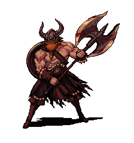<figcaption class="cap">images/image_002.gif</figcaption></figure></div></section></main></div><div id="lightbox" class="lightbox" aria-hidden="true"><button class="close" type="button" id="lightboxClose">Close</button></div>
<script>(function(){const lb=document.getElementById('lightbox');const lbImg=document.getElementById('lightboxImg');const close=document.getElementById('lightboxClose');if(!lb||!lbImg||!close)return;document.querySelectorAll('.card img').forEach(img=>{img.addEventListener('click',()=>{lbImg.src=img.src;lb.classList.add('open');lb.setAttribute('aria-hidden','false');});});function hide(){lb.classList.remove('open');lb.setAttribute('aria-hidden','true');lbImg.src='';}close.addEventListener('click',hide);lb.addEventListener('click',e=>{if(e.target===lb)hide();});document.addEventListener('keydown',e=>{if(e.key==='Escape')hide();});})();</script></body></html>